pacman::p_load(sf, raster, spatstat, tmap, tidyverse)Take-home Exercise 1
Harnessing Geospatial Analytics to Uncover Armed Conflict Patterns in Myanmar
1. Overview
1.1 Background of Myanmar’s Long-Standing Conflicts

The conflict in Myanmar is not just a result of the coup but is deeply rooted in the country’s decades-old complex ethnic and political landscape, characterised by tensions between the central government and various ethnic minority groups, each with its own armed forces. The post-coup violence has exacerbated these long-standing conflicts, leading to a severe humanitarian crisis, with thousands killed, hundreds of thousands displaced, and widespread human rights abuses reported.
1.2 Objectives of Take-home Exercise 1
As such, Geospatial analytics has become a valuable tool for evaluating and comprehending the intricacies of increasing conflicts. This exercise aims to reveal the spatial and spatio-temporal distribution of armed conflict in Myanmar by leveraging spatial point pattern analysis. Additionally, it aims to gain clearer insights into the geographical and logistical patterns of violence throughout the nation.
By the end of this take-home exercise, I aim to complete these steps in my spatial point pattern analysis in uncovering the distribution of armed conflict in Myanmar.
- Using appropriate function of sf and tidyverse packages, import and transform the downloaded armed conflict data and administrative boundary data into sf tibble data.frames.
- Using the geospatial data sets prepared, derive quarterly KDE layers.
- Using the geospatial data sets prepared, perform 2nd-Order Spatial Point Patterns Analysis.
- Using the geospatial data sets prepared, derive quarterly spatio-temporal KDE layers.
- Using the geospatial data sets prepared, perform 2nd-Order Spatio-temporal Point Patterns Analysis.
- Using appropriate tmap functions, display the KDE and Spatio-temporal KDE layers on openstreetmap of Myanmar.
- Describe the spatial patterns revealed by the KDE and Spatio-temporal KDE maps.
1.3 About the Datasets
1) Armed Conflict Data (From ACLED)
This Armed Conflict Location & Event Data (ACLED) is an independent, impartial, international non-profit organisation which owns an extensive database of violent conflict and protest in countries and territories around the world.

For the purpose of this exercise, I have downloaded ACLED’s data on Myanmar which includes a series of conflict events, particularly between 1 January 2021 to 30 June 2024.
🔗 Source: ACLED
📁 Format: comma separated values (CSV)
As the dataset is rather extensive, I will be performing my analysis on armed conflict events in a quarterly basis to streamline my tasks. The data included in this dataset are as follows:
Event Type
ACLED categorises events into various types. I will mainly be focusing on these four event types: Battles, Explosion/Remote violence, Strategic developments, and Violence against civilians.
| Data Category | Data Columns |
|---|---|
Event Type ACLED categorises events into various types. I will mainly be focusing on these four event types: Battles, Explosion/Remote violence, Strategic developments, and Violence against civilians. |
event_id_cnty: unique ID for each conflict event_type: category of event e.g. Battle, Violence Against Civilians, Protests, Explosions/Remote Violence, Strategic Developments sub_event_type: a more detailed classification within event type disorder_type: classifies the event based on the nature of the disorder e.g. political violence, demonstrations, strategic developments[A1] civilian_targeting: yes/no value, whether event involves specifically targeting civilians Note: when “strategic developments” are used in Event Type, it is also used in the disorder type (vice-versa) |
Location and Geospatial Data The database provides detailed geographic information, pinpointing the exact or approximate locations of conflict events across Myanmar. This includes cities, towns, and rural areas. |
iso: the country code for Myanmar which uses 104 in this case region: region of conflict within Myanmar country: indicates Myanmar admin1, admin2, admin3: 1st, 2nd and 3rd level administration division within Myanmar e.g. states, division, sub-division location: specific geographic location or name of the place where the conflict event occurred latitude: latitude of the conflict event longitude: longitude of the conflict event geo_precision: indicates the level of precision for the geographic coordinates provided |
Date and Time ACLED records the specific dates and, where possible, times of conflict events. |
event_date: date of conflict year: year of conflict time_precision: accuracy of the date and time information provided |
Actors Indicate the actors involved in the conflict, such as the Tatmadaw (Myanmar’s military), ethnic armed organizations, local militias, civilian protestors, and other groups. |
actor1: primary actor involved in the conflict event. E.g. a government force, rebel group, militia, or any organised entity assoc_actor_1: a secondary group that is aligned with or supports the primary actor (Actor1) in the event inter1: an interaction code that categorises actor1, could be a government force, rebel group, military force, rioter, civilian, or other entities actor2 (NEW): second primary actor (i.e. secondary actor), could be a group opposing actor1 assoc_actor_2 (NEW): a secondary group that supports actor2 inter2 (NEW): an interaction code that categorises actor2 interaction: combined description of actor1 and actor2 |
| Fatalities | fatalities: tracks the number of reported fatalities associated with each conflict event. |
| Others | source: source of information for the conflict event source_scale: scale of the source e.g. local, national, international notes : additional comments tags: keywords associated with the conflict event timestamp: date and time when conflict event was entered/updated in the database |
2) Geospatial Data (From Myanmar Information Management Unit)
I will also be using a geospatial dataset from the Myanmar Information Management Unit (MIMU) in shapefile (.shp) format, specifically of the Myanmar state at the 2nd administrative level with district boundaries.
🔗 Source: MIMU
📁 Format: shapefile (.shp)
My reasoning for choosing the district boundary dataset is that we do not want to select a boundary dataset that is too broad when analysing conflict events since it might not provide sufficient insights to trends where conflict events happen. Neither do we want to analyse a geography that is too divided (e.g. Admin 3) since it can be computationally inefficient as seen in the types of boundary data below.
| Admin 0 | Admin 1 | Admin 1 | Admin 2 - To Use | Admin 3 |
|---|---|---|---|---|
| National boundary | Myanmar region | Region and sub-region | District boundary | Myanmar township |
 |
 |
 |
 |
 |
I have donwloaded the two data sets and organised them into my folder as follows.

2. Let’s Set Up!
2.1 Importing Libraries into R
To carry out this exercise, I will be using the following R packages:
- sf: a relatively new R package specially designed to import, manage and process vector-based geospatial data in R.
- spatstat: has a wide range of useful functions for point pattern analysis. In this take-home exercise, it will be used to perform 1st- and 2nd-order spatial point patterns analysis and derive kernel density estimation (KDE) layer.
- raster: reads, writes, manipulates, analyses and model of gridded spatial data (i.e. raster). In this take-home exercise, it will be used to convert image output generate by spatstat into raster format.
- maptools: provides a set of tools for manipulating geographic data. We mainly use it to convert Spatial objects into ppp format of spatstat.
- tmap: provides functions for plotting cartographic quality static point patterns maps or interactive maps by using leaflet API.
Now, let’s install and load these packages in RStudio.
2.2 Importing Data Sets into R
Next, I will import the downloaded armed conflict data. For aspatial datasets like this, we will import into Rstudio using read_csv() function of the readr package.
# Import armed conflict data
conflict_data <- read_csv("data/aspatial/2021-01-01-2024-06-30-Myanmar.csv")Rows: 87746 Columns: 28
── Column specification ────────────────────────────────────────────────────────
Delimiter: ","
chr (18): event_id_cnty, event_date, disorder_type, event_type, sub_event_ty...
dbl (10): year, time_precision, inter1, interaction, iso, latitude, longitud...
ℹ Use `spec()` to retrieve the full column specification for this data.
ℹ Specify the column types or set `show_col_types = FALSE` to quiet this message.🔎 Observations: The
2021-01-01-2024-06-30-Myanmar.csvdataset contains 87746 rows and 28 columns which indicates the presence of 87746 unique armed conflict events in Myanmar.
After importing the dataset, we can inspect the dataset using the glimpse() function.
# Inspect the conflict data
glimpse(conflict_data)Rows: 87,746
Columns: 28
$ event_id_cnty <chr> "MMR64313", "MMR64313", "MMR64320", "MMR64320", "MM…
$ event_date <chr> "30 June 2024", "30 June 2024", "30 June 2024", "30…
$ year <dbl> 2024, 2024, 2024, 2024, 2024, 2024, 2024, 2024, 202…
$ time_precision <dbl> 1, 1, 1, 1, 1, 1, 1, 1, 1, 1, 1, 1, 1, 1, 1, 1, 1, …
$ disorder_type <chr> "Political violence", "Political violence", "Politi…
$ event_type <chr> "Battles", "Battles", "Battles", "Battles", "Battle…
$ sub_event_type <chr> "Armed clash", "Armed clash", "Armed clash", "Armed…
$ actor1 <chr> "People's Defense Force - Mandalay", "Military Forc…
$ assoc_actor_1 <chr> "MDA - AGF: Madaya - The Authentic Genes Force; SST…
$ inter1 <dbl> 3, 1, 3, 1, 3, 1, 1, 3, 1, 1, 1, 2, 2, 1, 1, 2, 1, …
$ interaction <dbl> 13, 13, 13, 13, 13, 13, 10, 13, 13, 10, 12, 12, 12,…
$ civilian_targeting <chr> NA, NA, NA, NA, NA, NA, NA, NA, NA, NA, NA, NA, NA,…
$ iso <dbl> 104, 104, 104, 104, 104, 104, 104, 104, 104, 104, 1…
$ region <chr> "Southeast Asia", "Southeast Asia", "Southeast Asia…
$ country <chr> "Myanmar", "Myanmar", "Myanmar", "Myanmar", "Myanma…
$ admin1 <chr> "Mandalay", "Mandalay", "Mandalay", "Mandalay", "Ma…
$ admin2 <chr> "Mandalay", "Mandalay", "Pyinoolwin", "Pyinoolwin",…
$ admin3 <chr> "Patheingyi", "Patheingyi", "Singu", "Singu", "Thab…
$ location <chr> "Aung Tha Pyay", "Aung Tha Pyay", "Pin Lel Gyi", "P…
$ latitude <dbl> 22.1504, 22.1504, 22.5752, 22.5752, 22.8800, 22.880…
$ longitude <dbl> 96.2364, 96.2364, 96.0661, 96.0661, 95.9700, 95.970…
$ geo_precision <dbl> 2, 2, 1, 1, 2, 2, 2, 2, 2, 2, 1, 1, 1, 1, 2, 2, 1, …
$ source <chr> "Democratic Voice of Burma; Irrawaddy", "Democratic…
$ source_scale <chr> "National", "National", "National", "National", "Na…
$ notes <chr> "On 30 June 2024, near Aung Tha Pyay village (Pathe…
$ fatalities <dbl> 0, 0, 0, 0, 0, 0, 0, 0, 0, 0, 0, 0, 2, 2, 0, 0, 0, …
$ tags <chr> NA, NA, NA, NA, NA, NA, NA, NA, NA, NA, NA, NA, NA,…
$ timestamp <dbl> 1720552468, 1720552468, 1720552468, 1720552468, 172…🔎 Observations: The event_date field shows that it uses a character datatype instead of date - we will fix this later. Also, we can observe that the
longitudeandlangitudefields appear to be adopting the WGS84 geographic coordinate system since they are in the -180/180 and -90/90 range respectively.
I will also import the administrative boundary data into a simple features tibble data.frame using st_read() of the sf package. This function reads the shapefile data and returns an sf object that can be used for further analysis.
# Import boundary data
boundary_sf <- st_read(dsn = "data/geospatial",layer = "mmr_polbnda_adm2_250k_mimu") %>% st_transform(crs = 32647)Reading layer `mmr_polbnda_adm2_250k_mimu' from data source
`C:\SamanthaxFoo\IS415-GAA\Take-home_Ex\Take-home_Ex1\data\geospatial'
using driver `ESRI Shapefile'
Simple feature collection with 80 features and 7 fields
Geometry type: MULTIPOLYGON
Dimension: XY
Bounding box: xmin: 92.1721 ymin: 9.696844 xmax: 101.17 ymax: 28.54554
Geodetic CRS: WGS 84
Note
In the code above, the %>% operator is used to pass the output of st_read() directly to the st_transform() function. Since the dataset represents the Myanmar boundary, we need to assign the appropriate coordinate reference system, which is UTM zone 47N (EPSG:32647), east of Myanmar. The st_transform() function then converts the CRS of the sf object to EPSG:32647.
In the code below, we can notice that the ESPG code has been updated to 32647.
# Check for changes
st_crs(boundary_sf)Coordinate Reference System:
User input: EPSG:32647
wkt:
PROJCRS["WGS 84 / UTM zone 47N",
BASEGEOGCRS["WGS 84",
ENSEMBLE["World Geodetic System 1984 ensemble",
MEMBER["World Geodetic System 1984 (Transit)"],
MEMBER["World Geodetic System 1984 (G730)"],
MEMBER["World Geodetic System 1984 (G873)"],
MEMBER["World Geodetic System 1984 (G1150)"],
MEMBER["World Geodetic System 1984 (G1674)"],
MEMBER["World Geodetic System 1984 (G1762)"],
MEMBER["World Geodetic System 1984 (G2139)"],
ELLIPSOID["WGS 84",6378137,298.257223563,
LENGTHUNIT["metre",1]],
ENSEMBLEACCURACY[2.0]],
PRIMEM["Greenwich",0,
ANGLEUNIT["degree",0.0174532925199433]],
ID["EPSG",4326]],
CONVERSION["UTM zone 47N",
METHOD["Transverse Mercator",
ID["EPSG",9807]],
PARAMETER["Latitude of natural origin",0,
ANGLEUNIT["degree",0.0174532925199433],
ID["EPSG",8801]],
PARAMETER["Longitude of natural origin",99,
ANGLEUNIT["degree",0.0174532925199433],
ID["EPSG",8802]],
PARAMETER["Scale factor at natural origin",0.9996,
SCALEUNIT["unity",1],
ID["EPSG",8805]],
PARAMETER["False easting",500000,
LENGTHUNIT["metre",1],
ID["EPSG",8806]],
PARAMETER["False northing",0,
LENGTHUNIT["metre",1],
ID["EPSG",8807]]],
CS[Cartesian,2],
AXIS["(E)",east,
ORDER[1],
LENGTHUNIT["metre",1]],
AXIS["(N)",north,
ORDER[2],
LENGTHUNIT["metre",1]],
USAGE[
SCOPE["Navigation and medium accuracy spatial referencing."],
AREA["Between 96°E and 102°E, northern hemisphere between equator and 84°N, onshore and offshore. China. Indonesia. Laos. Malaysia - West Malaysia. Mongolia. Myanmar (Burma). Russian Federation. Thailand."],
BBOX[0,96,84,102]],
ID["EPSG",32647]]Here, I will use the plot() function which plots the geometry of the sf object. The st_geometry() function is used to extract the geometry of the mpsz_sf object which includes the districts of Myanmar as shown below.
par(mar = c(0,0,0,0))
plot(st_geometry(boundary_sf))
3. Data Wrangling
3.1 Fixing Incorrect Datatypes
Recall that the earlier inspection of the conflict_data tibble data frame revealed that the datatype indicated for event date is wrongly labelled as a character instead of a date format.
# Inspect the conflict data
head(conflict_data)# A tibble: 6 × 28
event_id_cnty event_date year time_precision disorder_type event_type
<chr> <chr> <dbl> <dbl> <chr> <chr>
1 MMR64313 30 June 2024 2024 1 Political violence Battles
2 MMR64313 30 June 2024 2024 1 Political violence Battles
3 MMR64320 30 June 2024 2024 1 Political violence Battles
4 MMR64320 30 June 2024 2024 1 Political violence Battles
5 MMR64321 30 June 2024 2024 1 Political violence Battles
6 MMR64321 30 June 2024 2024 1 Political violence Battles
# ℹ 22 more variables: sub_event_type <chr>, actor1 <chr>, assoc_actor_1 <chr>,
# inter1 <dbl>, interaction <dbl>, civilian_targeting <chr>, iso <dbl>,
# region <chr>, country <chr>, admin1 <chr>, admin2 <chr>, admin3 <chr>,
# location <chr>, latitude <dbl>, longitude <dbl>, geo_precision <dbl>,
# source <chr>, source_scale <chr>, notes <chr>, fatalities <dbl>,
# tags <chr>, timestamp <dbl>As such, let’s convert the datatype to the correct ‘date’ format as shown below.
# Convert the datatype for event_date
conflict_data$event_date <- as.Date(conflict_data$event_date, format = "%d %B %Y")
# Check for changes
head(conflict_data)# A tibble: 6 × 28
event_id_cnty event_date year time_precision disorder_type event_type
<chr> <date> <dbl> <dbl> <chr> <chr>
1 MMR64313 2024-06-30 2024 1 Political violence Battles
2 MMR64313 2024-06-30 2024 1 Political violence Battles
3 MMR64320 2024-06-30 2024 1 Political violence Battles
4 MMR64320 2024-06-30 2024 1 Political violence Battles
5 MMR64321 2024-06-30 2024 1 Political violence Battles
6 MMR64321 2024-06-30 2024 1 Political violence Battles
# ℹ 22 more variables: sub_event_type <chr>, actor1 <chr>, assoc_actor_1 <chr>,
# inter1 <dbl>, interaction <dbl>, civilian_targeting <chr>, iso <dbl>,
# region <chr>, country <chr>, admin1 <chr>, admin2 <chr>, admin3 <chr>,
# location <chr>, latitude <dbl>, longitude <dbl>, geo_precision <dbl>,
# source <chr>, source_scale <chr>, notes <chr>, fatalities <dbl>,
# tags <chr>, timestamp <dbl>3.2 Add new year_quarter column
We will want to create a new column to indicate the specific year and quarter for each conflict event since the spatial analysis will be done later in a quarterly manner.
# Extract year and quarter
conflict_data$year_quarter <- paste0(
year(conflict_data$event_date),
" Q",
quarter(conflict_data$event_date)
)
# View the new data column
unique(conflict_data$year_quarter) [1] "2024 Q2" "2024 Q1" "2023 Q4" "2023 Q3" "2023 Q2" "2023 Q1" "2022 Q4"
[8] "2022 Q3" "2022 Q2" "2022 Q1" "2021 Q4" "2021 Q3" "2021 Q2" "2021 Q1"3.3 Fixing Duplicates in conflict_data Dataframe
Let’s first check the presence of duplicates in our dataframe using the duplicated() function.
# Check for duplicates
any(duplicated(conflict_data))[1] TRUE
Note
Reflection: Should duplicated data be removed in this analysis?
Considering that there might be different armed conflict events repeatedly occurring in certain districts more than others,
Additionally, we can see from the code below that there can be a single event (e.g. MMR64313) with different actor1 values, typically due to counterattacks from opposing sides, leading to different data entries into the conflict_data dataset.
Let’s inspect this duplicated event ID: MMR64313 for instance. We can observe this is a political violence event with battles between two actors, namely the People’s Defense Force and Military Forces of Myanmar, which are two opposing political parties of Myanmar’s ongoing conflict.
# Inspect an instance of the duplciated event IDs
head(conflict_data,2)# A tibble: 2 × 29
event_id_cnty event_date year time_precision disorder_type event_type
<chr> <date> <dbl> <dbl> <chr> <chr>
1 MMR64313 2024-06-30 2024 1 Political violence Battles
2 MMR64313 2024-06-30 2024 1 Political violence Battles
# ℹ 23 more variables: sub_event_type <chr>, actor1 <chr>, assoc_actor_1 <chr>,
# inter1 <dbl>, interaction <dbl>, civilian_targeting <chr>, iso <dbl>,
# region <chr>, country <chr>, admin1 <chr>, admin2 <chr>, admin3 <chr>,
# location <chr>, latitude <dbl>, longitude <dbl>, geo_precision <dbl>,
# source <chr>, source_scale <chr>, notes <chr>, fatalities <dbl>,
# tags <chr>, timestamp <dbl>, year_quarter <chr>💡 Hence, I will remove duplicated events found in the
conflict_datadataframe as long as the rows have the same event ID indicated. However, I will create new columns to store the secondary actors, associated actors and interaction code. This will ensure we don’t lose sight of important data for the analysis later.
Here, I did another check to ensure that there is a maximum of one other actor involved for the first 50 rows of conflict_data.
# Check duplicated events first 50 rows
duplicate_counts_first_50 <- conflict_data %>%
slice(1:50) %>%
group_by(event_id_cnty) %>%
summarize(count = n()) %>%
filter(count > 1)
# View the result
print(duplicate_counts_first_50)# A tibble: 22 × 2
event_id_cnty count
<chr> <int>
1 MMR64280 2
2 MMR64282 2
3 MMR64283 2
4 MMR64285 2
5 MMR64286 2
6 MMR64287 2
7 MMR64304 2
8 MMR64313 2
9 MMR64314 2
10 MMR64316 2
# ℹ 12 more rowsNext, I add the actor1, assoc_actor_1 and inter1 values of the duplicated rows to the new actor2, assoc_actor_2 and inter2 columns for the repeated rows.
# Load necessary library
library(dplyr)
# Retrieve data of duplicated rows
merged_duplicates <- conflict_data %>%
filter(duplicated(event_id_cnty) | duplicated(event_id_cnty, fromLast = TRUE)) %>%
arrange(event_id_cnty) %>%
group_by(event_id_cnty) %>%
summarize(
actor2 = last(actor1),
assoc_actor_2 = last(assoc_actor_1),
inter2 = last(inter1)
)
conflict_data_no_duplicates <- conflict_data %>%
filter(!duplicated(event_id_cnty))
# Update conflict_data dataframe with new columns
conflict_data <- conflict_data_no_duplicates %>%
left_join(merged_duplicates, by = "event_id_cnty") %>%
mutate(
actor1 = coalesce(actor2, actor1),
assoc_actor_1 = coalesce(assoc_actor_2, assoc_actor_1),
inter1 = coalesce(inter2, inter1)
)
# View dataframe
print(head(conflict_data))# A tibble: 6 × 32
event_id_cnty event_date year time_precision disorder_type event_type
<chr> <date> <dbl> <dbl> <chr> <chr>
1 MMR64313 2024-06-30 2024 1 Political violence Battles
2 MMR64320 2024-06-30 2024 1 Political violence Battles
3 MMR64321 2024-06-30 2024 1 Political violence Battles
4 MMR64322 2024-06-30 2024 1 Strategic developmen… Strategic…
5 MMR64323 2024-06-30 2024 1 Political violence Battles
6 MMR64324 2024-06-30 2024 1 Strategic developmen… Strategic…
# ℹ 26 more variables: sub_event_type <chr>, actor1 <chr>, assoc_actor_1 <chr>,
# inter1 <dbl>, interaction <dbl>, civilian_targeting <chr>, iso <dbl>,
# region <chr>, country <chr>, admin1 <chr>, admin2 <chr>, admin3 <chr>,
# location <chr>, latitude <dbl>, longitude <dbl>, geo_precision <dbl>,
# source <chr>, source_scale <chr>, notes <chr>, fatalities <dbl>,
# tags <chr>, timestamp <dbl>, year_quarter <chr>, actor2 <chr>,
# assoc_actor_2 <chr>, inter2 <dbl>We can observe that there are no longer any duplicated event IDs in our conflict_data data frame.
# Check for duplicates again
any(duplicated(conflict_data))[1] FALSE3.4 Converting Aspatial Data to Simple Feature Format
For the purpose of this exercise, we will want to integrate and analyse aspatial data in a geographic context.
As such, I will use the class() function as a simple test to check if conflict_data (a non-geospatial tabular data frame) needs to be converted to a sf data frame - if it outputs anything else but sf, then it’s not a simple feature data frame!
class(conflict_data)[1] "tbl_df" "tbl" "data.frame"🔎 Observations: we can see that
conflict_datais not a sf data frame based on what is returned. Since a non-simple feature data frame does not have a “geometry” column, we’ll need to convertconflict_datainto a simple feature data frame
We can convert conflict_data into a simple feature data frame by using st_as_sf() from the sf package. Addiitionally, recall that the geographic coordinate system (e.g., WGS 84) is not appropriate for analyses that involve distance/area. Hence, we will also need to transform coordinate system from geographic (ESPG: 4326) to projected (ESPG: 32647) using st_transform().
# Convert to simple feature format
conflict_data_sf <- st_as_sf(conflict_data, coords = c("longitude", "latitude"), crs=4326) %>% st_transform(crs = 32647)
# Inspect the changes
glimpse(conflict_data_sf)Rows: 51,553
Columns: 31
$ event_id_cnty <chr> "MMR64313", "MMR64320", "MMR64321", "MMR64322", "MM…
$ event_date <date> 2024-06-30, 2024-06-30, 2024-06-30, 2024-06-30, 20…
$ year <dbl> 2024, 2024, 2024, 2024, 2024, 2024, 2024, 2024, 202…
$ time_precision <dbl> 1, 1, 1, 1, 1, 1, 1, 1, 1, 1, 1, 1, 1, 1, 1, 1, 1, …
$ disorder_type <chr> "Political violence", "Political violence", "Politi…
$ event_type <chr> "Battles", "Battles", "Battles", "Strategic develop…
$ sub_event_type <chr> "Armed clash", "Armed clash", "Armed clash", "Chang…
$ actor1 <chr> "Military Forces of Myanmar (2021-)", "Military For…
$ assoc_actor_1 <chr> "MDA - AGF: Madaya - The Authentic Genes Force; SST…
$ inter1 <dbl> 1, 1, 1, 1, 1, 1, 2, 1, 2, 2, 2, 3, 1, 1, 7, 7, 1, …
$ interaction <dbl> 13, 13, 13, 10, 13, 10, 12, 12, 12, 12, 12, 13, 13,…
$ civilian_targeting <chr> NA, NA, NA, NA, NA, NA, NA, NA, NA, NA, NA, NA, NA,…
$ iso <dbl> 104, 104, 104, 104, 104, 104, 104, 104, 104, 104, 1…
$ region <chr> "Southeast Asia", "Southeast Asia", "Southeast Asia…
$ country <chr> "Myanmar", "Myanmar", "Myanmar", "Myanmar", "Myanma…
$ admin1 <chr> "Mandalay", "Mandalay", "Mandalay", "Sagaing", "Sag…
$ admin2 <chr> "Mandalay", "Pyinoolwin", "Pyinoolwin", "Shwebo", "…
$ admin3 <chr> "Patheingyi", "Singu", "Thabeikkyin", "Khin-U", "My…
$ location <chr> "Aung Tha Pyay", "Pin Lel Gyi", "Thabeikkyin", "Khi…
$ geo_precision <dbl> 2, 1, 2, 2, 2, 2, 1, 1, 2, 1, 1, 2, 1, 1, 2, 2, 1, …
$ source <chr> "Democratic Voice of Burma; Irrawaddy", "Irrawaddy"…
$ source_scale <chr> "National", "National", "National", "Subnational-Na…
$ notes <chr> "On 30 June 2024, near Aung Tha Pyay village (Pathe…
$ fatalities <dbl> 0, 0, 0, 0, 0, 0, 0, 2, 0, 0, 0, 0, 0, 0, 0, 0, 0, …
$ tags <chr> NA, NA, NA, NA, NA, NA, NA, NA, NA, NA, NA, NA, NA,…
$ timestamp <dbl> 1720552468, 1720552468, 1720552468, 1720552468, 172…
$ year_quarter <chr> "2024 Q2", "2024 Q2", "2024 Q2", "2024 Q2", "2024 Q…
$ actor2 <chr> "Military Forces of Myanmar (2021-)", "Military For…
$ assoc_actor_2 <chr> NA, NA, NA, NA, NA, NA, NA, NA, NA, NA, NA, "Uniden…
$ inter2 <dbl> 1, 1, 1, NA, 1, NA, 2, 1, 2, 2, 2, 3, 1, 1, 7, NA, …
$ geometry <POINT [m]> POINT (214961 2452068), POINT (198303.2 24994…🔎 Observations: Notice that a new column called
geometryhas been added into the data frame. On the other hand, thelongitudeandlatitudecolumns have been removed from the data frame.
We can further inspect the newly created ‘geometry’ column of conflict_data_sf
# Retrieve geometry column
st_geometry(conflict_data_sf)Geometry set for 51553 features
Geometry type: POINT
Dimension: XY
Bounding box: xmin: -208804.4 ymin: 1103500 xmax: 640934.5 ymax: 3042960
Projected CRS: WGS 84 / UTM zone 47N
First 5 geometries:POINT (214961 2452068)POINT (198303.2 2499463)POINT (189105.4 2533434)POINT (160913.9 2522331)POINT (146213 2428487)🔎 Observations: consists of 51,533 features consisting of point geometric features where the underlying datum is in WGS 84 format.
To ensure that the coordinate system is correctly updated, we can use the st_crs() function as shown. We can observe that the ESPG code is correctly indicated as 32647.
# Check CRS format
st_crs(conflict_data_sf)Coordinate Reference System:
User input: EPSG:32647
wkt:
PROJCRS["WGS 84 / UTM zone 47N",
BASEGEOGCRS["WGS 84",
ENSEMBLE["World Geodetic System 1984 ensemble",
MEMBER["World Geodetic System 1984 (Transit)"],
MEMBER["World Geodetic System 1984 (G730)"],
MEMBER["World Geodetic System 1984 (G873)"],
MEMBER["World Geodetic System 1984 (G1150)"],
MEMBER["World Geodetic System 1984 (G1674)"],
MEMBER["World Geodetic System 1984 (G1762)"],
MEMBER["World Geodetic System 1984 (G2139)"],
ELLIPSOID["WGS 84",6378137,298.257223563,
LENGTHUNIT["metre",1]],
ENSEMBLEACCURACY[2.0]],
PRIMEM["Greenwich",0,
ANGLEUNIT["degree",0.0174532925199433]],
ID["EPSG",4326]],
CONVERSION["UTM zone 47N",
METHOD["Transverse Mercator",
ID["EPSG",9807]],
PARAMETER["Latitude of natural origin",0,
ANGLEUNIT["degree",0.0174532925199433],
ID["EPSG",8801]],
PARAMETER["Longitude of natural origin",99,
ANGLEUNIT["degree",0.0174532925199433],
ID["EPSG",8802]],
PARAMETER["Scale factor at natural origin",0.9996,
SCALEUNIT["unity",1],
ID["EPSG",8805]],
PARAMETER["False easting",500000,
LENGTHUNIT["metre",1],
ID["EPSG",8806]],
PARAMETER["False northing",0,
LENGTHUNIT["metre",1],
ID["EPSG",8807]]],
CS[Cartesian,2],
AXIS["(E)",east,
ORDER[1],
LENGTHUNIT["metre",1]],
AXIS["(N)",north,
ORDER[2],
LENGTHUNIT["metre",1]],
USAGE[
SCOPE["Navigation and medium accuracy spatial referencing."],
AREA["Between 96°E and 102°E, northern hemisphere between equator and 84°N, onshore and offshore. China. Indonesia. Laos. Malaysia - West Malaysia. Mongolia. Myanmar (Burma). Russian Federation. Thailand."],
BBOX[0,96,84,102]],
ID["EPSG",32647]]3.5 Reduce Data File Size
In this section, I will reduce the current Myanmar armed conflict dataset as the time taken for computing the kernel density estimates can take up to 30 minutes long which is not computationally efficient.
1) Remove unused columns in boundary_sf
As seen, there are 8 columns in the simple feature data frame of bouondary_sf.
# Inspect first rows of data in boundary_sf
head(boundary_sf)Simple feature collection with 6 features and 7 fields
Geometry type: MULTIPOLYGON
Dimension: XY
Bounding box: xmin: -14915.04 ymin: 1736124 xmax: 187961.7 ymax: 2051144
Projected CRS: WGS 84 / UTM zone 47N
OBJECTID ST ST_PCODE DT DT_PCODE DT_MMR PCode_V
1 1 Ayeyarwady MMR017 Hinthada MMR017D002 ဟင်္သာတခရိုင် 9.4
2 2 Ayeyarwady MMR017 Labutta MMR017D004 လပွတ္တာခရိုင် 9.4
3 3 Ayeyarwady MMR017 Maubin MMR017D005 မအူပင်ခရိုင် 9.4
4 4 Ayeyarwady MMR017 Myaungmya MMR017D003 မြောင်းမြခရိုင် 9.4
5 5 Ayeyarwady MMR017 Pathein MMR017D001 ပုသိမ်ခရိုင် 9.4
6 6 Ayeyarwady MMR017 Pyapon MMR017D006 ဖျာပုံခရိုင် 9.4
geometry
1 MULTIPOLYGON (((90859.89 20...
2 MULTIPOLYGON (((75991.51 17...
3 MULTIPOLYGON (((115559 1928...
4 MULTIPOLYGON (((39919.39 18...
5 MULTIPOLYGON (((-6302.348 1...
6 MULTIPOLYGON (((93411.72 17...I will remove ’DT_MMR” column as we already have the District Name in English as indicated under DT and would hence not require the district names in Myanmar Language. Additionally, we will remove the coded versions of ST (state/region) and DT (district) columns, namely ST_PCODE and DT_PCODE. Additionally, we won’t need the PCode_V column which indicates the version of the P-code system since we will be dropping the PCODE columns.
boundary_sf <- boundary_sf %>% dplyr::select('OBJECTID', 'ST', 'DT','geometry')
summary(boundary_sf) OBJECTID ST DT geometry
Min. : 1.00 Length:80 Length:80 MULTIPOLYGON :80
1st Qu.:20.75 Class :character Class :character epsg:32647 : 0
Median :40.50 Mode :character Mode :character +proj=utm ...: 0
Mean :40.50
3rd Qu.:60.25
Max. :80.00 2) Remove unused columns in conflict_data
I will also remove unnecessary columns of the conflict_data data frame that won’t be used in our spatial analysis later.
# Remove time_precision, iso, region (i.e SEA), country (I.e. Myanmar), geo_precision, source, notes
conflict_data_sf <- conflict_data_sf %>%
select(-time_precision, -iso, -region, -country, -geo_precision, -source, -tags, -notes, -timestamp)
summary(conflict_data_sf) event_id_cnty event_date year disorder_type
Length:51553 Min. :2021-01-01 Min. :2021 Length:51553
Class :character 1st Qu.:2021-10-23 1st Qu.:2021 Class :character
Mode :character Median :2022-07-28 Median :2022 Mode :character
Mean :2022-08-25 Mean :2022
3rd Qu.:2023-07-05 3rd Qu.:2023
Max. :2024-06-30 Max. :2024
event_type sub_event_type actor1 assoc_actor_1
Length:51553 Length:51553 Length:51553 Length:51553
Class :character Class :character Class :character Class :character
Mode :character Mode :character Mode :character Mode :character
inter1 interaction civilian_targeting admin1
Min. :1.000 Min. :10.00 Length:51553 Length:51553
1st Qu.:1.000 1st Qu.:13.00 Class :character Class :character
Median :6.000 Median :17.00 Mode :character Mode :character
Mean :4.311 Mean :25.33
3rd Qu.:7.000 3rd Qu.:33.00
Max. :8.000 Max. :80.00
admin2 admin3 location source_scale
Length:51553 Length:51553 Length:51553 Length:51553
Class :character Class :character Class :character Class :character
Mode :character Mode :character Mode :character Mode :character
fatalities year_quarter actor2 assoc_actor_2
Min. : 0.000 Length:51553 Length:51553 Length:51553
1st Qu.: 0.000 Class :character Class :character Class :character
Median : 0.000 Mode :character Mode :character Mode :character
Mean : 1.062
3rd Qu.: 1.000
Max. :201.000
inter2 geometry
Min. :1.000 POINT :51553
1st Qu.:1.000 epsg:32647 : 0
Median :7.000 +proj=utm ...: 0
Mean :4.261
3rd Qu.:7.000
Max. :8.000
NA's :15360 3) Categorise conflict data by district (DELETE)
Next, I categorised the Myanmar conflict data by districts to reduce the conflict_data data set. and this requires the CRS for the conflict and boudnary data to be the same format.
First, we’ll assign the district category for each conflict data as demonstrated and explained below.
conflict_data_sf(the conflict events) is joined withboundary_sf(the district boundaries).- The join happens based on the
st_intersects()function, meaning the join operation checks whether each conflict event (point) is located inside a district (polygon). - If a conflict point intersects a district polygon, the district’s attributes are added to that conflict event in the resulting dataset.
library(sf)
library(dplyr)
# Perform a spatial join - linking each conflict event to its district region
conflict_data_with_district <- st_join(conflict_data_sf, boundary_sf, join = st_intersects)
# Check update
head(conflict_data_with_district[c('event_id_cnty','location','ST','DT','geometry')])Simple feature collection with 6 features and 4 fields
Geometry type: POINT
Dimension: XY
Bounding box: xmin: 76997.72 ymin: 2428487 xmax: 214961 ymax: 2533434
Projected CRS: WGS 84 / UTM zone 47N
# A tibble: 6 × 5
event_id_cnty location ST DT geometry
<chr> <chr> <chr> <chr> <POINT [m]>
1 MMR64313 Aung Tha Pyay Mandalay Mandalay (214961 2452068)
2 MMR64320 Pin Lel Gyi Mandalay Pyinoolwin (198303.2 2499463)
3 MMR64321 Thabeikkyin Mandalay Pyinoolwin (189105.4 2533434)
4 MMR64322 Khin-U Sagaing Shwebo (160913.9 2522331)
5 MMR64323 Myinmu Sagaing Sagaing (146213 2428487)
6 MMR64324 Yinmarbin Sagaing Yinmarbin (76997.72 2447719)Secondly, we can select specific districts for the conflict events…
unique(conflict_data_with_district$ST) [1] "Mandalay" "Sagaing" "Shan (North)" "Shan (South)" "Tanintharyi"
[6] "Ayeyarwady" "Bago (East)" "Chin" "Kachin" "Mon"
[11] "Rakhine" "Magway" "Bago (West)" "Kayah" "Kayin"
[16] "Yangon" "Shan (East)" "Nay Pyi Taw" NA sum(is.na(conflict_data_with_district$ST))[1] 73.6 Converting Simple Features Data Frame into ppp Object
It is important that we convert conflict_data_sf (a simple feature data frame) into a planer point pattern (ppp) object format, since the spatstat package that we’ll be using for the Spatial Point Pattern Analysis later is specifically designed for working with ppp-formated data. Additionally, I will begin with categorising the ppp objects into their unique year_quarter category.
# Create an empty list to store the ppp objects
ppp_list <- list()
# Loop through each unique year_quarter category
for (yq in unique(conflict_data_sf$year_quarter)) {
# Subset the data for the current year_quarter
subset_data_sf <- conflict_data_sf %>% filter(year_quarter == yq)
# Convert the subset to a ppp object
subset_ppp <- as.ppp(subset_data_sf$geometry)
# Add the ppp object to the list
ppp_list[[yq]] <- subset_ppp
}
# Check list
ppp_list$`2024 Q2`
Planar point pattern: 2830 points
window: rectangle = [-208804.4, 597543.7] x [1103500.1, 3026504.9] units
$`2024 Q1`
Planar point pattern: 3258 points
window: rectangle = [-207135, 591875.9] x [1245380, 3026504.9] units
$`2023 Q4`
Planar point pattern: 3753 points
window: rectangle = [-206931.7, 604775.1] x [1103500.1, 3020772.2] units
$`2023 Q3`
Planar point pattern: 3200 points
window: rectangle = [-197883.4, 518300.4] x [1103500.1, 3027041.8] units
$`2023 Q2`
Planar point pattern: 2921 points
window: rectangle = [-191261.5, 518300.4] x [1103500.1, 3006372.9] units
$`2023 Q1`
Planar point pattern: 3368 points
window: rectangle = [-199243.8, 591875.9] x [1103500.1, 3026504.9] units
$`2022 Q4`
Planar point pattern: 3689 points
window: rectangle = [-206531.5, 518300.4] x [1103500.1, 2931517.1] units
$`2022 Q3`
Planar point pattern: 3882 points
window: rectangle = [-206196.6, 568361.5] x [1103500.1, 3026504.9] units
$`2022 Q2`
Planar point pattern: 4116 points
window: rectangle = [-206931.7, 640934.5] x [1103500.1, 3026504.9] units
$`2022 Q1`
Planar point pattern: 4267 points
window: rectangle = [-204784, 591875.9] x [1103500.1, 3026504.9] units
$`2021 Q4`
Planar point pattern: 4453 points
window: rectangle = [-200024.3, 591875.9] x [1103500.1, 3042960.3] units
$`2021 Q3`
Planar point pattern: 3394 points
window: rectangle = [-193181.1, 591875.9] x [1103500.1, 3042960.3] units
$`2021 Q2`
Planar point pattern: 4727 points
window: rectangle = [-191409.1, 640934.5] x [1132472.1, 3042960.3] units
$`2021 Q1`
Planar point pattern: 3695 points
window: rectangle = [-203795.3, 591875.9] x [1103500.1, 3042960.3] unitsWe can visualise the spread of conflict events across each quarter from January 2021 to June 2024 using the plot() function as shown below.
# Load necessary libraries
library(spatstat.geom)
library(ggplot2)
# Ensure 'year_quarter' is a factor
conflict_data_sf$year_quarter <- as.factor(conflict_data_sf$year_quarter)
# Loop through each unique year_quarter and create separate plots
year_quarters <- unique(conflict_data_sf$year_quarter)
# Set up a grid layout for multiple plots (adjust 'mfrow' as needed)
par(mfrow = c(2,3))
par(mar = c(0,0,1,0))
# Loop through each year_quarter and plot
for (yq in year_quarters) {
subset_data_sf <- conflict_data_sf[conflict_data_sf$year_quarter == yq, ]
conflict_data_ppp <- as.ppp(subset_data_sf$geometry)
# Plot each subset ppp object
plot(conflict_data_ppp, main = paste("Year-Quarter:", yq))
}
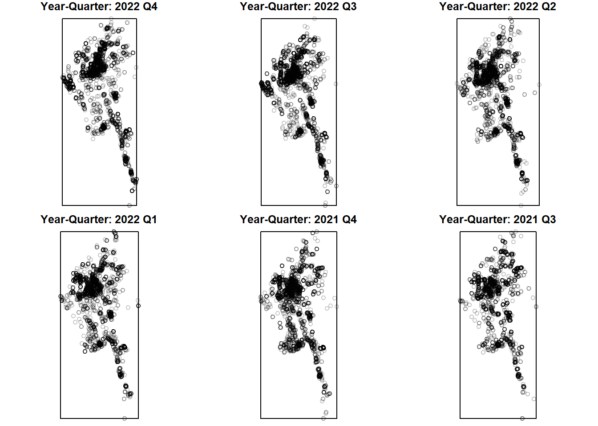
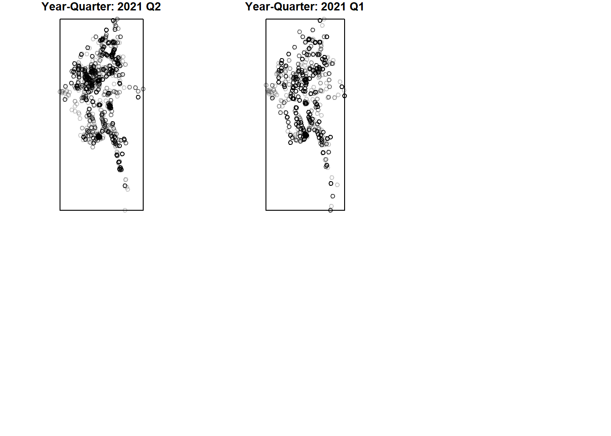
💡 Observations: It is noticeable that there conflict events have occured more frequently since 2021 as points plotted on the graph have gotten darker across 2021 to 2024. We can also observe the possibility of duplicated events occurring from the darker spots in the plot, in which it appears more intense in Myanmar’s central and west regions.
We can also take a quick look at the ppp object properties using the summary() function which gives us insights into the number of points the object contains, number of duplicates and window size, etc.
# Get summary of each ppp object
for (name in names(ppp_list)) {
ppp_obj <- ppp_list[[name]]
cat("Summary for", name, ":\n")
print(summary(ppp_obj))
cat("\n")
}Summary for 2024 Q2 :
Planar point pattern: 2830 points
Average intensity 1.825087e-09 points per square unit
*Pattern contains duplicated points*
Coordinates are given to 13 decimal places
Window: rectangle = [-208804.4, 597543.7] x [1103500.1, 3026504.9] units
(806300 x 1923000 units)
Window area = 1.55061e+12 square units
Summary for 2024 Q1 :
Planar point pattern: 3258 points
Average intensity 2.289307e-09 points per square unit
*Pattern contains duplicated points*
Coordinates are given to 13 decimal places
Window: rectangle = [-207135, 591875.9] x [1245380, 3026504.9] units
(799000 x 1781000 units)
Window area = 1.42314e+12 square units
Summary for 2023 Q4 :
Planar point pattern: 3753 points
Average intensity 2.411547e-09 points per square unit
*Pattern contains duplicated points*
Coordinates are given to 13 decimal places
Window: rectangle = [-206931.7, 604775.1] x [1103500.1, 3020772.2] units
(811700 x 1917000 units)
Window area = 1.55626e+12 square units
Summary for 2023 Q3 :
Planar point pattern: 3200 points
Average intensity 2.322865e-09 points per square unit
*Pattern contains duplicated points*
Coordinates are given to 13 decimal places
Window: rectangle = [-197883.4, 518300.4] x [1103500.1, 3027041.8] units
(716200 x 1924000 units)
Window area = 1.37761e+12 square units
Summary for 2023 Q2 :
Planar point pattern: 2921 points
Average intensity 2.163374e-09 points per square unit
*Pattern contains duplicated points*
Coordinates are given to 13 decimal places
Window: rectangle = [-191261.5, 518300.4] x [1103500.1, 3006372.9] units
(709600 x 1903000 units)
Window area = 1.35021e+12 square units
Summary for 2023 Q1 :
Planar point pattern: 3368 points
Average intensity 2.213857e-09 points per square unit
*Pattern contains duplicated points*
Coordinates are given to 13 decimal places
Window: rectangle = [-199243.8, 591875.9] x [1103500.1, 3026504.9] units
(791100 x 1923000 units)
Window area = 1.52133e+12 square units
Summary for 2022 Q4 :
Planar point pattern: 3689 points
Average intensity 2.784141e-09 points per square unit
*Pattern contains duplicated points*
Coordinates are given to 13 decimal places
Window: rectangle = [-206531.5, 518300.4] x [1103500.1, 2931517.1] units
(724800 x 1828000 units)
Window area = 1.325e+12 square units
Summary for 2022 Q3 :
Planar point pattern: 3882 points
Average intensity 2.606281e-09 points per square unit
*Pattern contains duplicated points*
Coordinates are given to 13 decimal places
Window: rectangle = [-206196.6, 568361.5] x [1103500.1, 3026504.9] units
(774600 x 1923000 units)
Window area = 1.48948e+12 square units
Summary for 2022 Q2 :
Planar point pattern: 4116 points
Average intensity 2.524455e-09 points per square unit
*Pattern contains duplicated points*
Coordinates are given to 13 decimal places
Window: rectangle = [-206931.7, 640934.5] x [1103500.1, 3026504.9] units
(847900 x 1923000 units)
Window area = 1.63045e+12 square units
Summary for 2022 Q1 :
Planar point pattern: 4267 points
Average intensity 2.785283e-09 points per square unit
*Pattern contains duplicated points*
Coordinates are given to 13 decimal places
Window: rectangle = [-204784, 591875.9] x [1103500.1, 3026504.9] units
(796700 x 1923000 units)
Window area = 1.53198e+12 square units
Summary for 2021 Q4 :
Planar point pattern: 4453 points
Average intensity 2.899355e-09 points per square unit
*Pattern contains duplicated points*
Coordinates are given to 13 decimal places
Window: rectangle = [-200024.3, 591875.9] x [1103500.1, 3042960.3] units
(791900 x 1939000 units)
Window area = 1.53586e+12 square units
Summary for 2021 Q3 :
Planar point pattern: 3394 points
Average intensity 2.229101e-09 points per square unit
*Pattern contains duplicated points*
Coordinates are given to 13 decimal places
Window: rectangle = [-193181.1, 591875.9] x [1103500.1, 3042960.3] units
(785100 x 1939000 units)
Window area = 1.52259e+12 square units
Summary for 2021 Q2 :
Planar point pattern: 4727 points
Average intensity 2.972615e-09 points per square unit
*Pattern contains duplicated points*
Coordinates are given to 13 decimal places
Window: rectangle = [-191409.1, 640934.5] x [1132472.1, 3042960.3] units
(832300 x 1910000 units)
Window area = 1.59018e+12 square units
Summary for 2021 Q1 :
Planar point pattern: 3695 points
Average intensity 2.394418e-09 points per square unit
*Pattern contains duplicated points*
Coordinates are given to 13 decimal places
Window: rectangle = [-203795.3, 591875.9] x [1103500.1, 3042960.3] units
(795700 x 1939000 units)
Window area = 1.54317e+12 square units🔎 Observations: It can be observed that there are duplicated locations found in all the ppp objects as seen from the summary outputs above. This could be caused by the occurrence of multiple conflicts in the same locations across each quarter.
3.7 Creating owin object
When analysing spatial point patterns, it is a good practice to confine the analysis with a geographical area, that is Myanmar’s boundary in this case. In spatstat, an object called owin is specially designed to represent this polygonal region.
The code chunk below is used to convert the boundary_data_sf simple feature data frame into an owin object of spatstat.
# Convert to owin object
myanmar_owin <- as.owin(boundary_sf)
# Visualise the owin object
plot(myanmar_owin)
Note
From my observations, the as.owin() function converts the boundary_data_sf spatial boundary into a window object that represents the outer boundary of the spatial region and does not handle internal structures or districts we previously saw from the plot of boundary_data_sf.
We can also take a quick look at the owin object properties as shown. I will be converting it to a data frame for the purposes of getting a quick glimpse of the object.
# Summary info of owin object
owin_df <- as.data.frame(myanmar_owin)
print(head(owin_df)) x y id sign
1 56519.39 2741919 1 -1
2 56917.28 2741947 1 -1
3 57000.15 2741973 1 -1
4 57068.51 2741994 1 -1
5 57221.44 2742142 1 -1
6 57068.51 2741994 1 -13.8 Combining ppp Object and owin Object
In this last step of geospatial data wrangling, I will mask all ppp object with the owin object I created earlier to put in place all conflict events within the boundary of Myanmar. Doing so can also optimise the memory usage for large datasets.
# Initialize an empty list to store masked ppp objects
masked_ppp_list <- list()
# Iterate over each ppp object in the list
for (name in names(ppp_list)) {
ppp_obj <- ppp_list[[name]]
# Mask the ppp object with the owin object
masked_ppp <- ppp_obj[myanmar_owin]
# Store the masked ppp object in the new list
masked_ppp_list[[name]] <- masked_ppp
}We can take a peak into one of the ppp object outputted. Let us take the 2024 Q2 as reference here. We can observe that there are 1,083 points that make up the 2024 Q2 masked ppp object.
# Inspect 2024 Q2 masked ppp object
summary(masked_ppp_list$`2024 Q2`)Planar point pattern: 2830 points
Average intensity 4.225687e-09 points per square unit
*Pattern contains duplicated points*
Coordinates are given to 13 decimal places
Window: polygonal boundary
1077 separate polygons (510 holes)
vertices area relative.area
polygon 1 (hole) 9 -4.40154e-02 -6.57e-14
polygon 2 (hole) 3 -4.82818e-02 -7.21e-14
polygon 3 (hole) 3 -2.78345e-03 -4.16e-15
polygon 4 (hole) 3 -4.99414e-03 -7.46e-15
polygon 5 (hole) 3 -6.70916e-04 -1.00e-15
polygon 6 (hole) 3 -4.99759e-03 -7.46e-15
polygon 7 (hole) 6 -3.24429e-03 -4.84e-15
polygon 8 (hole) 11 -5.35508e-02 -8.00e-14
polygon 9 (hole) 3 -3.06875e-03 -4.58e-15
polygon 10 (hole) 3 -7.63674e-03 -1.14e-14
polygon 11 (hole) 3 -8.61831e-05 -1.29e-16
polygon 12 (hole) 3 -2.44103e-02 -3.64e-14
polygon 13 (hole) 3 -4.88140e-05 -7.29e-17
polygon 14 (hole) 4 -1.74466e-04 -2.61e-16
polygon 15 (hole) 4 -2.30891e-05 -3.45e-17
polygon 16 (hole) 4 -6.25343e-08 -9.34e-20
polygon 17 (hole) 4 -3.68040e-02 -5.50e-14
polygon 18 (hole) 3 -1.27227e-06 -1.90e-18
polygon 19 (hole) 4 -1.25504e-03 -1.87e-15
polygon 20 (hole) 3 -1.56980e-02 -2.34e-14
polygon 21 (hole) 4 -1.13609e-06 -1.70e-18
polygon 22 (hole) 4 -8.02867e-02 -1.20e-13
polygon 23 (hole) 4 -3.98058e-05 -5.94e-17
polygon 24 (hole) 4 -2.89739e-02 -4.33e-14
polygon 25 (hole) 5 -7.39370e-02 -1.10e-13
polygon 26 (hole) 6 -1.08246e-01 -1.62e-13
polygon 27 (hole) 13 -3.27066e-01 -4.88e-13
polygon 28 (hole) 3 -3.55050e-03 -5.30e-15
polygon 29 (hole) 3 -2.84064e-02 -4.24e-14
polygon 30 (hole) 3 -8.07641e-04 -1.21e-15
polygon 31 (hole) 4 -5.20949e-03 -7.78e-15
polygon 32 (hole) 4 -3.21397e-04 -4.80e-16
polygon 33 (hole) 4 -2.54957e-05 -3.81e-17
polygon 34 (hole) 3 -4.29634e-04 -6.42e-16
polygon 35 (hole) 6 -6.02382e-04 -8.99e-16
polygon 36 (hole) 4 -4.91851e-04 -7.34e-16
polygon 37 26 2.85778e+06 4.27e-06
polygon 38 (hole) 3 -6.81164e-07 -1.02e-18
polygon 39 (hole) 4 -3.07951e-07 -4.60e-19
polygon 40 (hole) 6 -3.55081e-06 -5.30e-18
polygon 41 (hole) 7 -5.43205e-06 -8.11e-18
polygon 42 (hole) 4 -3.63127e-06 -5.42e-18
polygon 43 (hole) 3 -2.05109e-08 -3.06e-20
polygon 44 (hole) 3 -2.85606e-06 -4.26e-18
polygon 45 (hole) 4 -1.18245e-06 -1.77e-18
polygon 46 (hole) 17 -6.10429e-07 -9.11e-19
polygon 47 (hole) 20 -1.53031e-05 -2.29e-17
polygon 48 (hole) 3 -1.45824e-08 -2.18e-20
polygon 49 3 0.00000e+00 0.00e+00
polygon 50 (hole) 4 -2.46195e-06 -3.68e-18
polygon 51 (hole) 4 -2.96501e-07 -4.43e-19
polygon 52 (hole) 3 -1.38411e-10 -2.07e-22
polygon 53 (hole) 3 -3.75034e-07 -5.60e-19
polygon 54 (hole) 13 -3.24152e-06 -4.84e-18
polygon 55 (hole) 7 -3.78991e-06 -5.66e-18
polygon 56 (hole) 4 -6.04718e-07 -9.03e-19
polygon 57 (hole) 6 -5.93663e-06 -8.86e-18
polygon 58 (hole) 4 -4.12114e-07 -6.15e-19
polygon 59 (hole) 12 -7.18332e-06 -1.07e-17
polygon 60 (hole) 4 -1.93975e-08 -2.90e-20
polygon 61 (hole) 4 -6.17467e-06 -9.22e-18
polygon 62 (hole) 4 -2.09557e-07 -3.13e-19
polygon 63 (hole) 4 -2.21723e-06 -3.31e-18
polygon 64 (hole) 3 -4.42968e-09 -6.61e-21
polygon 65 (hole) 5 -6.37155e-07 -9.51e-19
polygon 66 (hole) 4 -9.89059e-10 -1.48e-21
polygon 67 (hole) 4 -3.13888e-07 -4.69e-19
polygon 68 (hole) 17 -1.19222e-05 -1.78e-17
polygon 69 (hole) 3 -1.33356e-07 -1.99e-19
polygon 70 (hole) 4 -1.83791e-07 -2.74e-19
polygon 71 (hole) 8 -3.87272e-06 -5.78e-18
polygon 72 (hole) 4 -7.16314e-07 -1.07e-18
polygon 73 (hole) 5 -3.36832e-06 -5.03e-18
polygon 74 3 0.00000e+00 0.00e+00
polygon 75 (hole) 8 -2.57590e-06 -3.85e-18
polygon 76 (hole) 4 -1.33552e-06 -1.99e-18
polygon 77 (hole) 13 -1.47187e-05 -2.20e-17
polygon 78 (hole) 3 -3.06322e-08 -4.57e-20
polygon 79 (hole) 18 -1.77679e-06 -2.65e-18
polygon 80 (hole) 28 -1.68354e-05 -2.51e-17
polygon 81 (hole) 4 -4.45494e-07 -6.65e-19
polygon 82 (hole) 3 -9.34421e-09 -1.40e-20
polygon 83 (hole) 4 -1.41707e-06 -2.12e-18
polygon 84 (hole) 4 -6.53761e-08 -9.76e-20
polygon 85 (hole) 19 -1.90011e-05 -2.84e-17
polygon 86 (hole) 4 -1.54308e-07 -2.30e-19
polygon 87 (hole) 3 -3.77368e-08 -5.63e-20
polygon 88 (hole) 4 -4.25983e-07 -6.36e-19
polygon 89 (hole) 4 -4.95083e-07 -7.39e-19
polygon 90 (hole) 12 -9.30557e-06 -1.39e-17
polygon 91 (hole) 3 -8.86667e-07 -1.32e-18
polygon 92 (hole) 12 -8.53008e-06 -1.27e-17
polygon 93 (hole) 3 -3.66755e-08 -5.48e-20
polygon 94 (hole) 3 -1.41477e-06 -2.11e-18
polygon 95 (hole) 4 -7.84561e-07 -1.17e-18
polygon 96 (hole) 5 -4.22144e-07 -6.30e-19
polygon 97 (hole) 10 -5.88893e-06 -8.79e-18
polygon 98 (hole) 3 -3.62874e-09 -5.42e-21
polygon 99 (hole) 11 -6.90020e-06 -1.03e-17
polygon 100 (hole) 3 -1.89816e-07 -2.83e-19
polygon 101 (hole) 3 -3.16910e-09 -4.73e-21
polygon 102 (hole) 3 -4.46313e-11 -6.66e-23
polygon 103 (hole) 4 -1.91393e-10 -2.86e-22
polygon 104 (hole) 3 -5.89181e-11 -8.80e-23
polygon 105 (hole) 6 -1.10636e-06 -1.65e-18
polygon 106 (hole) 5 -1.67657e-07 -2.50e-19
polygon 107 (hole) 4 -6.16825e-07 -9.21e-19
polygon 108 (hole) 3 -4.27072e-08 -6.38e-20
polygon 109 (hole) 7 -4.08747e-06 -6.10e-18
polygon 110 (hole) 7 -3.01043e-06 -4.50e-18
polygon 111 (hole) 4 -8.10353e-07 -1.21e-18
polygon 112 (hole) 8 -1.67883e-06 -2.51e-18
polygon 113 (hole) 3 -5.59874e-07 -8.36e-19
polygon 114 (hole) 3 -9.12038e-09 -1.36e-20
polygon 115 (hole) 3 -2.36378e-08 -3.53e-20
polygon 116 (hole) 9 -1.26780e-06 -1.89e-18
polygon 117 (hole) 4 -8.59087e-07 -1.28e-18
polygon 118 (hole) 6 -4.84636e-06 -7.24e-18
polygon 119 (hole) 6 -4.43426e-06 -6.62e-18
polygon 120 (hole) 6 -1.20121e-06 -1.79e-18
polygon 121 (hole) 18 -5.27266e-06 -7.87e-18
polygon 122 3 0.00000e+00 0.00e+00
polygon 123 (hole) 10 -3.29169e-06 -4.92e-18
polygon 124 (hole) 4 -8.51749e-09 -1.27e-20
polygon 125 (hole) 8 -5.92493e-06 -8.85e-18
polygon 126 (hole) 4 -2.91207e-09 -4.35e-21
polygon 127 (hole) 3 -2.28096e-07 -3.41e-19
polygon 128 (hole) 16 -1.60925e-05 -2.40e-17
polygon 129 (hole) 10 -4.90022e-06 -7.32e-18
polygon 130 (hole) 4 -1.48376e-07 -2.22e-19
polygon 131 (hole) 4 -2.03880e-06 -3.04e-18
polygon 132 (hole) 4 -3.89614e-07 -5.82e-19
polygon 133 (hole) 4 -2.17445e-06 -3.25e-18
polygon 134 (hole) 4 -2.61948e-11 -3.91e-23
polygon 135 (hole) 3 -8.35404e-08 -1.25e-19
polygon 136 (hole) 4 -5.15289e-07 -7.69e-19
polygon 137 (hole) 4 -1.10636e-06 -1.65e-18
polygon 138 (hole) 4 -3.64554e-08 -5.44e-20
polygon 139 (hole) 6 -1.43627e-06 -2.14e-18
polygon 140 (hole) 4 -2.01434e-08 -3.01e-20
polygon 141 (hole) 4 -7.27925e-07 -1.09e-18
polygon 142 (hole) 3 -7.98403e-10 -1.19e-21
polygon 143 (hole) 3 -1.02779e-09 -1.53e-21
polygon 144 (hole) 3 -9.29060e-10 -1.39e-21
polygon 145 (hole) 4 -2.49801e-08 -3.73e-20
polygon 146 (hole) 5 -8.55458e-07 -1.28e-18
polygon 147 (hole) 4 -3.03075e-07 -4.53e-19
polygon 148 (hole) 4 -7.98422e-07 -1.19e-18
polygon 149 (hole) 6 -4.42224e-07 -6.60e-19
polygon 150 (hole) 16 -1.01618e-05 -1.52e-17
polygon 151 (hole) 3 -6.65795e-12 -9.94e-24
polygon 152 (hole) 6 -2.86436e-06 -4.28e-18
polygon 153 (hole) 3 -2.53888e-09 -3.79e-21
polygon 154 (hole) 8 -1.95774e-06 -2.92e-18
polygon 155 (hole) 3 -2.44254e-07 -3.65e-19
polygon 156 (hole) 3 -3.98298e-08 -5.95e-20
polygon 157 (hole) 6 -1.09122e-06 -1.63e-18
polygon 158 (hole) 3 -1.26010e-07 -1.88e-19
polygon 159 (hole) 5 -2.95571e-07 -4.41e-19
polygon 160 (hole) 12 -4.89387e-06 -7.31e-18
polygon 161 (hole) 4 -7.44484e-08 -1.11e-19
polygon 162 (hole) 3 -1.29527e-06 -1.93e-18
polygon 163 (hole) 4 -1.89229e-07 -2.83e-19
polygon 164 (hole) 11 -1.82644e-06 -2.73e-18
polygon 165 (hole) 3 -5.61908e-09 -8.39e-21
polygon 166 (hole) 3 -4.61241e-07 -6.89e-19
polygon 167 (hole) 4 -4.99926e-07 -7.46e-19
polygon 168 (hole) 13 -1.01273e-05 -1.51e-17
polygon 169 (hole) 3 -7.51563e-07 -1.12e-18
polygon 170 (hole) 4 -3.62315e-07 -5.41e-19
polygon 171 3 9.35049e-13 1.40e-24
polygon 172 (hole) 8 -1.73835e-06 -2.60e-18
polygon 173 (hole) 3 -9.28418e-08 -1.39e-19
polygon 174 43 7.32477e+06 1.09e-05
polygon 175 (hole) 3 -6.10885e-08 -9.12e-20
polygon 176 (hole) 19 -1.26639e-05 -1.89e-17
polygon 177 (hole) 3 -7.60391e-09 -1.14e-20
polygon 178 (hole) 9 -4.32760e-06 -6.46e-18
polygon 179 (hole) 4 -8.26535e-09 -1.23e-20
polygon 180 (hole) 6 -8.41940e-06 -1.26e-17
polygon 181 (hole) 30 -5.76785e-06 -8.61e-18
polygon 182 (hole) 12 -5.43629e-06 -8.12e-18
polygon 183 (hole) 16 -1.91385e-05 -2.86e-17
polygon 184 (hole) 15 -2.09775e-05 -3.13e-17
polygon 185 (hole) 52 -3.03955e-05 -4.54e-17
polygon 186 103 1.86991e+07 2.79e-05
polygon 187 (hole) 10 -7.36911e-06 -1.10e-17
polygon 188 (hole) 6 -2.02037e-06 -3.02e-18
polygon 189 (hole) 7 -1.03571e-06 -1.55e-18
polygon 190 (hole) 3 -1.08626e-13 -1.62e-25
polygon 191 (hole) 3 -5.70725e-07 -8.52e-19
polygon 192 (hole) 10 -2.38281e-06 -3.56e-18
polygon 193 (hole) 3 -1.90389e-10 -2.84e-22
polygon 194 (hole) 4 -1.77684e-06 -2.65e-18
polygon 195 (hole) 3 -1.37607e-10 -2.05e-22
polygon 196 (hole) 4 -5.30670e-07 -7.92e-19
polygon 197 37 9.32316e+06 1.39e-05
polygon 198 (hole) 4 -2.18670e-07 -3.27e-19
polygon 199 (hole) 4 -6.43286e-07 -9.61e-19
polygon 200 (hole) 4 -5.24884e-07 -7.84e-19
polygon 201 (hole) 4 -4.70512e-07 -7.03e-19
polygon 202 (hole) 3 -2.04803e-07 -3.06e-19
polygon 203 (hole) 6 -1.35194e-06 -2.02e-18
polygon 204 (hole) 4 -1.88886e-07 -2.82e-19
polygon 205 (hole) 4 -3.53978e-07 -5.29e-19
polygon 206 (hole) 4 -8.51990e-07 -1.27e-18
polygon 207 (hole) 4 -1.08022e-06 -1.61e-18
polygon 208 (hole) 3 -6.06549e-11 -9.06e-23
polygon 209 (hole) 7 -5.94505e-06 -8.88e-18
polygon 210 (hole) 6 -2.25168e-06 -3.36e-18
polygon 211 (hole) 4 -1.51186e-06 -2.26e-18
polygon 212 (hole) 3 -2.61351e-08 -3.90e-20
polygon 213 (hole) 6 -8.62877e-06 -1.29e-17
polygon 214 371 2.43869e+08 3.64e-04
polygon 215 (hole) 4 -8.19764e-07 -1.22e-18
polygon 216 297 2.84905e+08 4.25e-04
polygon 217 (hole) 4 -3.40347e-07 -5.08e-19
polygon 218 (hole) 6 -1.40062e-06 -2.09e-18
polygon 219 (hole) 4 -1.31007e-07 -1.96e-19
polygon 220 (hole) 4 -9.82127e-07 -1.47e-18
polygon 221 (hole) 8 -1.40206e-05 -2.09e-17
polygon 222 (hole) 3 -3.36167e-08 -5.02e-20
polygon 223 (hole) 4 -9.79669e-07 -1.46e-18
polygon 224 (hole) 5 -1.27896e-07 -1.91e-19
polygon 225 (hole) 4 -6.22350e-07 -9.29e-19
polygon 226 (hole) 7 -3.02415e-06 -4.52e-18
polygon 227 (hole) 3 -1.89804e-09 -2.83e-21
polygon 228 (hole) 9 -6.19516e-06 -9.25e-18
polygon 229 33 1.68222e+07 2.51e-05
polygon 230 (hole) 8 -1.03323e-05 -1.54e-17
polygon 231 33 4.47665e+05 6.68e-07
polygon 232 19 1.34593e+05 2.01e-07
polygon 233 39 1.36327e+06 2.04e-06
polygon 234 137 1.55547e+08 2.32e-04
polygon 235 36 8.76479e+06 1.31e-05
polygon 236 79 3.08116e+07 4.60e-05
polygon 237 388 2.25271e+08 3.36e-04
polygon 238 316 7.78512e+07 1.16e-04
polygon 239 13 1.09564e+05 1.64e-07
polygon 240 18 3.49727e+05 5.22e-07
polygon 241 31 1.23017e+06 1.84e-06
polygon 242 16 6.55537e+05 9.79e-07
polygon 243 24 8.49487e+05 1.27e-06
polygon 244 30 2.54436e+06 3.80e-06
polygon 245 336 4.15806e+07 6.21e-05
polygon 246 330 1.69190e+08 2.53e-04
polygon 247 47 1.08035e+07 1.61e-05
polygon 248 39 4.94369e+06 7.38e-06
polygon 249 23 2.72438e+06 4.07e-06
polygon 250 33 5.70263e+06 8.52e-06
polygon 251 90 4.20329e+07 6.28e-05
polygon 252 28 1.35341e+06 2.02e-06
polygon 253 225 1.08816e+08 1.62e-04
polygon 254 33 9.16670e+06 1.37e-05
polygon 255 192 7.02655e+07 1.05e-04
polygon 256 49 1.49245e+07 2.23e-05
polygon 257 98 1.79076e+07 2.67e-05
polygon 258 6 6.37552e+05 9.52e-07
polygon 259 49 1.01233e+07 1.51e-05
polygon 260 141 3.43053e+07 5.12e-05
polygon 261 195 3.24345e+07 4.84e-05
polygon 262 51 3.38313e+06 5.05e-06
polygon 263 34 2.01400e+06 3.01e-06
polygon 264 13 2.50435e+05 3.74e-07
polygon 265 9 9.04824e+04 1.35e-07
polygon 266 34 4.61794e+06 6.90e-06
polygon 267 17 4.58200e+05 6.84e-07
polygon 268 15 2.74776e+05 4.10e-07
polygon 269 21 5.34978e+05 7.99e-07
polygon 270 19 4.55347e+05 6.80e-07
polygon 271 71 3.42557e+06 5.11e-06
polygon 272 24 1.32420e+06 1.98e-06
polygon 273 15 3.26247e+05 4.87e-07
polygon 274 39 8.65790e+05 1.29e-06
polygon 275 43 1.41627e+06 2.11e-06
polygon 276 24 7.52068e+05 1.12e-06
polygon 277 96 1.32101e+07 1.97e-05
polygon 278 38 1.18003e+06 1.76e-06
polygon 279 429 5.99087e+08 8.95e-04
polygon 280 13 1.74105e+05 2.60e-07
polygon 281 19 2.52336e+05 3.77e-07
polygon 282 16 3.11495e+05 4.65e-07
polygon 283 11 9.11047e+04 1.36e-07
polygon 284 12 2.13470e+05 3.19e-07
polygon 285 17 5.82663e+05 8.70e-07
polygon 286 56 2.60440e+07 3.89e-05
polygon 287 107 4.91389e+06 7.34e-06
polygon 288 51 2.79076e+06 4.17e-06
polygon 289 89 1.61156e+07 2.41e-05
polygon 290 28 1.30499e+06 1.95e-06
polygon 291 11 1.27616e+05 1.91e-07
polygon 292 34 2.54199e+06 3.80e-06
polygon 293 27 1.72476e+06 2.58e-06
polygon 294 37 2.01882e+06 3.01e-06
polygon 295 23 1.65571e+06 2.47e-06
polygon 296 33 3.05816e+06 4.57e-06
polygon 297 14 3.23153e+05 4.83e-07
polygon 298 91 1.51209e+07 2.26e-05
polygon 299 12 2.42901e+05 3.63e-07
polygon 300 11 1.37889e+05 2.06e-07
polygon 301 58 2.29751e+07 3.43e-05
polygon 302 48 5.10265e+06 7.62e-06
polygon 303 22 1.30706e+06 1.95e-06
polygon 304 15 3.49480e+05 5.22e-07
polygon 305 17 1.57570e+06 2.35e-06
polygon 306 34 3.68725e+06 5.51e-06
polygon 307 34 5.21904e+06 7.79e-06
polygon 308 24 5.42734e+06 8.10e-06
polygon 309 422 4.66497e+08 6.97e-04
polygon 310 142 2.98767e+07 4.46e-05
polygon 311 132 2.18707e+07 3.27e-05
polygon 312 19 5.88230e+05 8.78e-07
polygon 313 22 1.77611e+06 2.65e-06
polygon 314 (hole) 4 -6.42929e-04 -9.60e-16
polygon 315 40 4.09952e+06 6.12e-06
polygon 316 (hole) 3 -2.52078e-03 -3.76e-15
polygon 317 (hole) 24 -5.61620e-01 -8.39e-13
polygon 318 28 1.47685e+06 2.21e-06
polygon 319 (hole) 8 -8.93463e-02 -1.33e-13
polygon 320 (hole) 8 -1.34123e-01 -2.00e-13
polygon 321 67 9.99685e+06 1.49e-05
polygon 322 (hole) 8 -6.36344e-02 -9.50e-14
polygon 323 (hole) 6 -7.57977e-02 -1.13e-13
polygon 324 (hole) 3 -4.31917e-06 -6.45e-18
polygon 325 (hole) 4 -2.24224e-02 -3.35e-14
polygon 326 (hole) 5 -9.35663e-02 -1.40e-13
polygon 327 (hole) 13 -1.39251e-01 -2.08e-13
polygon 328 (hole) 7 -1.46533e-01 -2.19e-13
polygon 329 (hole) 6 -7.59071e-02 -1.13e-13
polygon 330 (hole) 7 -5.15914e-03 -7.70e-15
polygon 331 (hole) 10 -4.09465e-02 -6.11e-14
polygon 332 (hole) 21 -1.86624e-01 -2.79e-13
polygon 333 (hole) 3 -1.69684e-02 -2.53e-14
polygon 334 (hole) 8 -4.08363e-02 -6.10e-14
polygon 335 (hole) 3 -1.73631e-02 -2.59e-14
polygon 336 (hole) 5 -1.41820e-02 -2.12e-14
polygon 337 (hole) 10 -6.15227e-02 -9.19e-14
polygon 338 (hole) 8 -2.90782e-02 -4.34e-14
polygon 339 (hole) 8 -6.15579e-02 -9.19e-14
polygon 340 (hole) 4 -7.46409e-04 -1.11e-15
polygon 341 (hole) 4 -1.05431e-02 -1.57e-14
polygon 342 (hole) 4 -8.25150e-03 -1.23e-14
polygon 343 (hole) 3 -2.59990e-02 -3.88e-14
polygon 344 (hole) 3 -9.09758e-03 -1.36e-14
polygon 345 (hole) 3 -1.96870e-02 -2.94e-14
polygon 346 (hole) 3 -4.01475e-05 -5.99e-17
polygon 347 (hole) 5 -1.49420e-02 -2.23e-14
polygon 348 (hole) 4 -9.23860e-03 -1.38e-14
polygon 349 3 2.52016e-10 3.76e-22
polygon 350 (hole) 7 -5.73305e-02 -8.56e-14
polygon 351 (hole) 4 -4.26735e-02 -6.37e-14
polygon 352 (hole) 7 -1.69748e-02 -2.53e-14
polygon 353 (hole) 3 -1.05617e-02 -1.58e-14
polygon 354 25 4.82266e+05 7.20e-07
polygon 355 (hole) 6 -3.72405e-02 -5.56e-14
polygon 356 (hole) 7 -3.08334e-02 -4.60e-14
polygon 357 (hole) 4 -6.69856e-03 -1.00e-14
polygon 358 (hole) 4 -1.15937e-02 -1.73e-14
polygon 359 (hole) 4 -3.11046e-03 -4.64e-15
polygon 360 (hole) 12 -1.45689e-01 -2.18e-13
polygon 361 (hole) 4 -5.64800e-02 -8.43e-14
polygon 362 (hole) 3 -1.11189e-02 -1.66e-14
polygon 363 (hole) 4 -2.60006e-02 -3.88e-14
polygon 364 (hole) 28 -1.79082e-01 -2.67e-13
polygon 365 (hole) 4 -1.58212e-04 -2.36e-16
polygon 366 (hole) 4 -9.07721e-06 -1.36e-17
polygon 367 (hole) 4 -6.73612e-03 -1.01e-14
polygon 368 16 4.14093e+05 6.18e-07
polygon 369 (hole) 4 -5.36782e-03 -8.02e-15
polygon 370 (hole) 6 -1.51450e-02 -2.26e-14
polygon 371 (hole) 4 -4.38078e-03 -6.54e-15
polygon 372 (hole) 4 -1.36409e-02 -2.04e-14
polygon 373 (hole) 4 -3.84271e-02 -5.74e-14
polygon 374 (hole) 3 -7.56650e-03 -1.13e-14
polygon 375 (hole) 4 -8.04110e-03 -1.20e-14
polygon 376 (hole) 6 -2.53481e-02 -3.78e-14
polygon 377 (hole) 4 -1.15603e-02 -1.73e-14
polygon 378 (hole) 3 -2.16578e-03 -3.23e-15
polygon 379 (hole) 3 -2.87542e-03 -4.29e-15
polygon 380 (hole) 4 -5.42478e-02 -8.10e-14
polygon 381 (hole) 3 -4.75090e-03 -7.09e-15
polygon 382 (hole) 4 -3.45047e-02 -5.15e-14
polygon 383 (hole) 6 -7.20472e-03 -1.08e-14
polygon 384 (hole) 4 -2.01300e-02 -3.01e-14
polygon 385 (hole) 9 -7.99880e-02 -1.19e-13
polygon 386 (hole) 4 -1.30938e-03 -1.96e-15
polygon 387 (hole) 9 -1.92423e-02 -2.87e-14
polygon 388 (hole) 3 -2.44523e-07 -3.65e-19
polygon 389 (hole) 4 -2.73889e-02 -4.09e-14
polygon 390 (hole) 3 -1.15109e-02 -1.72e-14
polygon 391 (hole) 4 -8.77810e-02 -1.31e-13
polygon 392 26 3.03928e+06 4.54e-06
polygon 393 (hole) 6 -8.99139e-02 -1.34e-13
polygon 394 (hole) 7 -1.69870e-01 -2.54e-13
polygon 395 (hole) 11 -1.85737e-01 -2.77e-13
polygon 396 (hole) 32 -8.16597e-01 -1.22e-12
polygon 397 (hole) 7 -6.59191e-02 -9.84e-14
polygon 398 (hole) 3 -1.48932e-02 -2.22e-14
polygon 399 (hole) 13 -3.56626e-01 -5.33e-13
polygon 400 (hole) 3 -1.64302e-06 -2.45e-18
polygon 401 (hole) 3 -2.03105e-03 -3.03e-15
polygon 402 14 1.53563e+05 2.29e-07
polygon 403 (hole) 4 -1.79040e-02 -2.67e-14
polygon 404 (hole) 15 -2.31620e-01 -3.46e-13
polygon 405 (hole) 7 -3.46670e-02 -5.18e-14
polygon 406 (hole) 6 -1.90172e-02 -2.84e-14
polygon 407 (hole) 6 -3.15828e-02 -4.72e-14
polygon 408 (hole) 13 -1.40633e-02 -2.10e-14
polygon 409 (hole) 6 -2.76240e-02 -4.12e-14
polygon 410 (hole) 3 -3.74154e-02 -5.59e-14
polygon 411 (hole) 3 -1.16808e-02 -1.74e-14
polygon 412 (hole) 10 -4.10705e-03 -6.13e-15
polygon 413 (hole) 4 -6.52777e-03 -9.75e-15
polygon 414 (hole) 6 -5.03054e-02 -7.51e-14
polygon 415 (hole) 4 -2.54303e-03 -3.80e-15
polygon 416 (hole) 3 -1.76691e-04 -2.64e-16
polygon 417 (hole) 4 -7.90017e-02 -1.18e-13
polygon 418 (hole) 3 -1.07902e-03 -1.61e-15
polygon 419 (hole) 3 -8.74117e-04 -1.31e-15
polygon 420 (hole) 12 -6.41926e-02 -9.59e-14
polygon 421 (hole) 4 -4.36892e-03 -6.52e-15
polygon 422 (hole) 4 -1.85183e-02 -2.77e-14
polygon 423 (hole) 10 -1.21248e-01 -1.81e-13
polygon 424 (hole) 10 -5.59537e-02 -8.35e-14
polygon 425 (hole) 4 -2.20079e-02 -3.29e-14
polygon 426 19 5.08538e+05 7.59e-07
polygon 427 (hole) 4 -1.45573e-02 -2.17e-14
polygon 428 (hole) 4 -4.47180e-03 -6.68e-15
polygon 429 16 1.80565e+05 2.70e-07
polygon 430 (hole) 3 -9.05154e-08 -1.35e-19
polygon 431 26 9.75091e+05 1.46e-06
polygon 432 (hole) 4 -1.90718e-03 -2.85e-15
polygon 433 (hole) 5 -1.60264e-02 -2.39e-14
polygon 434 (hole) 4 -1.82920e-02 -2.73e-14
polygon 435 (hole) 3 -7.26183e-03 -1.08e-14
polygon 436 (hole) 4 -2.12571e-02 -3.17e-14
polygon 437 (hole) 4 -2.41922e-03 -3.61e-15
polygon 438 (hole) 3 -2.80770e-02 -4.19e-14
polygon 439 (hole) 7 -5.31797e-03 -7.94e-15
polygon 440 (hole) 16 -1.29582e-01 -1.93e-13
polygon 441 (hole) 4 -1.88745e-02 -2.82e-14
polygon 442 (hole) 3 -1.45605e-02 -2.17e-14
polygon 443 (hole) 3 -2.28810e-02 -3.42e-14
polygon 444 (hole) 4 -1.59810e-02 -2.39e-14
polygon 445 (hole) 5 -1.72617e-02 -2.58e-14
polygon 446 (hole) 3 -4.96859e-03 -7.42e-15
polygon 447 (hole) 14 -8.85136e-02 -1.32e-13
polygon 448 (hole) 4 -1.85807e-02 -2.77e-14
polygon 449 (hole) 4 -8.61249e-03 -1.29e-14
polygon 450 (hole) 4 -2.06032e-02 -3.08e-14
polygon 451 (hole) 3 -1.66645e-03 -2.49e-15
polygon 452 (hole) 7 -1.66808e-02 -2.49e-14
polygon 453 (hole) 4 -1.67545e-03 -2.50e-15
polygon 454 (hole) 12 -3.97403e-02 -5.93e-14
polygon 455 (hole) 4 -4.18178e-02 -6.24e-14
polygon 456 (hole) 3 -2.93135e-03 -4.38e-15
polygon 457 (hole) 4 -6.31981e-04 -9.44e-16
polygon 458 (hole) 3 -8.54897e-07 -1.28e-18
polygon 459 (hole) 7 -8.42407e-03 -1.26e-14
polygon 460 (hole) 3 -1.34440e-06 -2.01e-18
polygon 461 (hole) 6 -1.60663e-02 -2.40e-14
polygon 462 (hole) 4 -5.66651e-05 -8.46e-17
polygon 463 (hole) 5 -1.17874e-02 -1.76e-14
polygon 464 (hole) 3 -1.79385e-08 -2.68e-20
polygon 465 (hole) 5 -2.62273e-02 -3.92e-14
polygon 466 (hole) 7 -2.12912e-02 -3.18e-14
polygon 467 (hole) 11 -4.47347e-02 -6.68e-14
polygon 468 (hole) 6 -5.00911e-03 -7.48e-15
polygon 469 (hole) 5 -3.58831e-02 -5.36e-14
polygon 470 (hole) 3 -1.06446e-03 -1.59e-15
polygon 471 (hole) 4 -1.50038e-02 -2.24e-14
polygon 472 (hole) 3 -8.74499e-04 -1.31e-15
polygon 473 (hole) 7 -3.75991e-02 -5.61e-14
polygon 474 19 2.15295e+05 3.21e-07
polygon 475 (hole) 6 -3.71337e-02 -5.54e-14
polygon 476 (hole) 3 -4.33900e-03 -6.48e-15
polygon 477 (hole) 7 -8.65067e-02 -1.29e-13
polygon 478 (hole) 8 -7.76951e-02 -1.16e-13
polygon 479 (hole) 6 -9.01907e-02 -1.35e-13
polygon 480 (hole) 8 -1.10404e-01 -1.65e-13
polygon 481 (hole) 8 -7.38263e-02 -1.10e-13
polygon 482 (hole) 3 -1.71517e-02 -2.56e-14
polygon 483 16 3.50061e+05 5.23e-07
polygon 484 (hole) 3 -1.54594e-08 -2.31e-20
polygon 485 (hole) 3 -1.78834e+02 -2.67e-10
polygon 486 3 0.00000e+00 0.00e+00
polygon 487 (hole) 4 -4.21570e-02 -6.29e-14
polygon 488 (hole) 7 -1.74178e-01 -2.60e-13
polygon 489 14 2.11571e+05 3.16e-07
polygon 490 (hole) 3 -1.05578e-02 -1.58e-14
polygon 491 (hole) 4 -4.32122e-02 -6.45e-14
polygon 492 11 1.59536e+05 2.38e-07
polygon 493 (hole) 4 -3.72418e-02 -5.56e-14
polygon 494 (hole) 6 -2.87378e-02 -4.29e-14
polygon 495 (hole) 3 -3.87472e-03 -5.79e-15
polygon 496 (hole) 6 -1.05664e-02 -1.58e-14
polygon 497 (hole) 4 -7.04521e-03 -1.05e-14
polygon 498 111 7.35028e+07 1.10e-04
polygon 499 (hole) 3 -5.99346e-03 -8.95e-15
polygon 500 (hole) 3 -2.33491e-02 -3.49e-14
polygon 501 (hole) 5 -1.14503e-01 -1.71e-13
polygon 502 19 6.34649e+05 9.48e-07
polygon 503 (hole) 3 -2.26549e-03 -3.38e-15
polygon 504 (hole) 4 -5.35016e-02 -7.99e-14
polygon 505 10 3.74827e+04 5.60e-08
polygon 506 13 1.37100e+05 2.05e-07
polygon 507 31 4.47193e+06 6.68e-06
polygon 508 19 1.23742e+06 1.85e-06
polygon 509 20 1.79201e+06 2.68e-06
polygon 510 (hole) 3 -1.64235e-02 -2.45e-14
polygon 511 16 2.19464e+05 3.28e-07
polygon 512 11 7.94092e+04 1.19e-07
polygon 513 (hole) 3 -2.99572e-02 -4.47e-14
polygon 514 (hole) 3 -8.18639e-03 -1.22e-14
polygon 515 (hole) 3 -2.81986e-02 -4.21e-14
polygon 516 14 1.45779e+05 2.18e-07
polygon 517 31 6.24672e+05 9.33e-07
polygon 518 11 2.29288e+04 3.42e-08
polygon 519 18 2.10998e+05 3.15e-07
polygon 520 26 2.52571e+06 3.77e-06
polygon 521 16 5.77783e+05 8.63e-07
polygon 522 26 8.87985e+05 1.33e-06
polygon 523 13 1.10557e+05 1.65e-07
polygon 524 21 9.55338e+05 1.43e-06
polygon 525 32 2.18189e+06 3.26e-06
polygon 526 18 7.64830e+05 1.14e-06
polygon 527 34 1.71336e+06 2.56e-06
polygon 528 115 9.29594e+05 1.39e-06
polygon 529 68 2.06761e+05 3.09e-07
polygon 530 40 4.87851e+06 7.28e-06
polygon 531 10 7.43137e+04 1.11e-07
polygon 532 17 5.95020e+05 8.88e-07
polygon 533 21 4.02132e+05 6.00e-07
polygon 534 21 1.09635e+06 1.64e-06
polygon 535 14 1.15356e+05 1.72e-07
polygon 536 (hole) 18 -1.39516e-01 -2.08e-13
polygon 537 20 3.13610e+05 4.68e-07
polygon 538 275 3.92648e+08 5.86e-04
polygon 539 16 2.19612e+05 3.28e-07
polygon 540 13 2.64858e+05 3.95e-07
polygon 541 23 1.25549e+06 1.87e-06
polygon 542 9 1.79312e+05 2.68e-07
polygon 543 15 2.93132e+05 4.38e-07
polygon 544 15 5.29892e+05 7.91e-07
polygon 545 23 4.95351e+05 7.40e-07
polygon 546 (hole) 10 -2.23148e-01 -3.33e-13
polygon 547 14 4.41976e+05 6.60e-07
polygon 548 19 3.32318e+05 4.96e-07
polygon 549 (hole) 6 -6.70431e-02 -1.00e-13
polygon 550 16 4.15914e+05 6.21e-07
polygon 551 22 5.10526e+05 7.62e-07
polygon 552 48 1.87148e+07 2.79e-05
polygon 553 18 1.62882e+06 2.43e-06
polygon 554 (hole) 9 -1.96623e-01 -2.94e-13
polygon 555 71 2.43615e+07 3.64e-05
polygon 556 116 5.16444e+07 7.71e-05
polygon 557 19 1.54144e+06 2.30e-06
polygon 558 11 2.01013e+05 3.00e-07
polygon 559 (hole) 4 -1.87899e-02 -2.81e-14
polygon 560 20 2.31201e+06 3.45e-06
polygon 561 15 5.94674e+05 8.88e-07
polygon 562 218 1.56252e+08 2.33e-04
polygon 563 162 8.80247e+07 1.31e-04
polygon 564 16 3.69968e+05 5.52e-07
polygon 565 14 1.61451e+05 2.41e-07
polygon 566 18 5.54566e+05 8.28e-07
polygon 567 19 5.07078e+05 7.57e-07
polygon 568 (hole) 7 -1.85276e-01 -2.77e-13
polygon 569 57 6.86475e+06 1.03e-05
polygon 570 15 6.56018e+05 9.80e-07
polygon 571 21 6.65092e+05 9.93e-07
polygon 572 15 5.97784e+05 8.93e-07
polygon 573 37 2.56010e+06 3.82e-06
polygon 574 13 1.66996e+05 2.49e-07
polygon 575 20 8.18381e+05 1.22e-06
polygon 576 21 2.89704e+06 4.33e-06
polygon 577 15 4.08213e+05 6.10e-07
polygon 578 (hole) 3 -1.98618e-03 -2.97e-15
polygon 579 104 4.71547e+07 7.04e-05
polygon 580 28 3.80443e+06 5.68e-06
polygon 581 67 3.17343e+07 4.74e-05
polygon 582 730 9.20735e+08 1.37e-03
polygon 583 16 2.01576e+05 3.01e-07
polygon 584 12 1.41506e+05 2.11e-07
polygon 585 15 4.92125e+05 7.35e-07
polygon 586 18 1.58128e+06 2.36e-06
polygon 587 (hole) 7 -6.67004e-02 -9.96e-14
polygon 588 25 1.94322e+06 2.90e-06
polygon 589 12 2.51373e+05 3.75e-07
polygon 590 412 4.47936e+08 6.69e-04
polygon 591 22 7.57105e+05 1.13e-06
polygon 592 16 6.97434e+05 1.04e-06
polygon 593 (hole) 3 -2.86673e-02 -4.28e-14
polygon 594 39 4.45130e+06 6.65e-06
polygon 595 (hole) 4 -2.17002e-02 -3.24e-14
polygon 596 (hole) 3 -1.55741e-02 -2.33e-14
polygon 597 13 8.83786e+05 1.32e-06
polygon 598 10 2.06200e+05 3.08e-07
polygon 599 (hole) 3 -3.50430e-02 -5.23e-14
polygon 600 76 3.60497e+07 5.38e-05
polygon 601 (hole) 5 -5.41615e-02 -8.09e-14
polygon 602 13 4.56433e+05 6.82e-07
polygon 603 28 2.30613e+06 3.44e-06
polygon 604 (hole) 4 -1.59313e-02 -2.38e-14
polygon 605 27 2.50338e+06 3.74e-06
polygon 606 14 4.69238e+05 7.01e-07
polygon 607 10 1.69886e+05 2.54e-07
polygon 608 (hole) 8 -1.09145e-01 -1.63e-13
polygon 609 16 5.42822e+05 8.11e-07
polygon 610 10 1.17633e+05 1.76e-07
polygon 611 8 7.08579e+04 1.06e-07
polygon 612 144 7.85300e+07 1.17e-04
polygon 613 37 1.93477e+06 2.89e-06
polygon 614 (hole) 3 -1.47049e-03 -2.20e-15
polygon 615 25 5.59996e+05 8.36e-07
polygon 616 (hole) 8 -1.20535e-01 -1.80e-13
polygon 617 44 2.86031e+06 4.27e-06
polygon 618 26 1.26276e+06 1.89e-06
polygon 619 149 1.37840e+08 2.06e-04
polygon 620 18 4.84958e+05 7.24e-07
polygon 621 73 2.93195e+07 4.38e-05
polygon 622 (hole) 5 -1.99458e-02 -2.98e-14
polygon 623 45 6.87481e+06 1.03e-05
polygon 624 (hole) 4 -1.81549e-02 -2.71e-14
polygon 625 64 1.80880e+07 2.70e-05
polygon 626 12 8.76879e+05 1.31e-06
polygon 627 26 2.78381e+06 4.16e-06
polygon 628 35 8.72326e+06 1.30e-05
polygon 629 53 1.06237e+07 1.59e-05
polygon 630 26 5.40467e+06 8.07e-06
polygon 631 148 1.05037e+08 1.57e-04
polygon 632 21 8.32798e+05 1.24e-06
polygon 633 21 2.23023e+06 3.33e-06
polygon 634 8 6.30805e+05 9.42e-07
polygon 635 78 3.67603e+07 5.49e-05
polygon 636 18 1.64745e+06 2.46e-06
polygon 637 58 1.31747e+07 1.97e-05
polygon 638 94 1.16837e+07 1.74e-05
polygon 639 53 3.17801e+06 4.75e-06
polygon 640 137 8.46454e+06 1.26e-05
polygon 641 23 4.36507e+05 6.52e-07
polygon 642 27 9.72136e+05 1.45e-06
polygon 643 55 1.98854e+06 2.97e-06
polygon 644 48 1.02651e+07 1.53e-05
polygon 645 15 3.16153e+05 4.72e-07
polygon 646 22 8.93201e+05 1.33e-06
polygon 647 18 2.91538e+05 4.35e-07
polygon 648 59 3.70736e+06 5.54e-06
polygon 649 11 1.55205e+05 2.32e-07
polygon 650 14 1.87401e+05 2.80e-07
polygon 651 11 6.54128e+04 9.77e-08
polygon 652 11 8.64659e+04 1.29e-07
polygon 653 12 2.25129e+05 3.36e-07
polygon 654 30 2.72178e+06 4.06e-06
polygon 655 (hole) 3 -2.26252e+00 -3.38e-12
polygon 656 180 1.80314e+07 2.69e-05
polygon 657 14 4.01942e+05 6.00e-07
polygon 658 103 1.33467e+07 1.99e-05
polygon 659 14 2.07708e+05 3.10e-07
polygon 660 55 4.38623e+06 6.55e-06
polygon 661 41 4.69733e+06 7.01e-06
polygon 662 74 3.92633e+06 5.86e-06
polygon 663 31 2.79477e+06 4.17e-06
polygon 664 17 8.74607e+05 1.31e-06
polygon 665 26 4.50962e+05 6.73e-07
polygon 666 18 1.15065e+06 1.72e-06
polygon 667 164 1.48037e+07 2.21e-05
polygon 668 12 3.17290e+05 4.74e-07
polygon 669 69 2.59551e+07 3.88e-05
polygon 670 37 7.85963e+05 1.17e-06
polygon 671 14 3.37873e+05 5.05e-07
polygon 672 12 1.77980e+05 2.66e-07
polygon 673 21 6.46195e+05 9.65e-07
polygon 674 24 2.69998e+06 4.03e-06
polygon 675 30 1.00675e+06 1.50e-06
polygon 676 57 4.22747e+06 6.31e-06
polygon 677 23 8.63543e+05 1.29e-06
polygon 678 11 2.01925e+05 3.02e-07
polygon 679 95 2.88232e+07 4.30e-05
polygon 680 452 9.64208e+07 1.44e-04
polygon 681 77 1.72297e+07 2.57e-05
polygon 682 16 3.33522e+05 4.98e-07
polygon 683 19 6.82895e+05 1.02e-06
polygon 684 43 3.95062e+06 5.90e-06
polygon 685 29 1.00709e+06 1.50e-06
polygon 686 21 8.90014e+05 1.33e-06
polygon 687 22 7.93453e+05 1.18e-06
polygon 688 13 4.52813e+05 6.76e-07
polygon 689 30 1.49817e+06 2.24e-06
polygon 690 48 4.23996e+06 6.33e-06
polygon 691 37 1.20290e+06 1.80e-06
polygon 692 19 4.85805e+05 7.25e-07
polygon 693 46 2.18001e+06 3.26e-06
polygon 694 7 1.33723e+05 2.00e-07
polygon 695 54 1.82059e+07 2.72e-05
polygon 696 10 8.57866e+05 1.28e-06
polygon 697 14 1.98445e+05 2.96e-07
polygon 698 19 4.68357e+05 6.99e-07
polygon 699 52 8.57765e+06 1.28e-05
polygon 700 73 7.91998e+06 1.18e-05
polygon 701 23 8.19561e+06 1.22e-05
polygon 702 10 1.06594e+05 1.59e-07
polygon 703 169 1.39462e+07 2.08e-05
polygon 704 17 2.55915e+05 3.82e-07
polygon 705 12 1.81516e+05 2.71e-07
polygon 706 16 3.68509e+05 5.50e-07
polygon 707 12 1.24954e+05 1.87e-07
polygon 708 1012 4.61886e+08 6.90e-04
polygon 709 15 5.42647e+05 8.10e-07
polygon 710 12 5.53088e+05 8.26e-07
polygon 711 24 1.06455e+06 1.59e-06
polygon 712 14 3.17038e+05 4.73e-07
polygon 713 17 1.25559e+06 1.87e-06
polygon 714 16 1.92407e+06 2.87e-06
polygon 715 80 1.86306e+07 2.78e-05
polygon 716 11 6.83880e+04 1.02e-07
polygon 717 166 4.21470e+07 6.29e-05
polygon 718 22 1.36174e+06 2.03e-06
polygon 719 31 6.07363e+05 9.07e-07
polygon 720 10 1.27067e+05 1.90e-07
polygon 721 164 5.02951e+07 7.51e-05
polygon 722 17 1.20798e+06 1.80e-06
polygon 723 59 2.41720e+06 3.61e-06
polygon 724 12 2.52952e+05 3.78e-07
polygon 725 14 2.44407e+05 3.65e-07
polygon 726 43 4.89177e+06 7.30e-06
polygon 727 40 3.86642e+06 5.77e-06
polygon 728 23 4.59203e+05 6.86e-07
polygon 729 14 1.79442e+05 2.68e-07
polygon 730 13 1.61191e+05 2.41e-07
polygon 731 43 1.33365e+06 1.99e-06
polygon 732 75 1.20247e+07 1.80e-05
polygon 733 17 9.96466e+04 1.49e-07
polygon 734 22 1.60660e+06 2.40e-06
polygon 735 730 1.16983e+08 1.75e-04
polygon 736 129 7.87539e+06 1.18e-05
polygon 737 22 4.66256e+05 6.96e-07
polygon 738 19 5.44519e+05 8.13e-07
polygon 739 16 3.73911e+05 5.58e-07
polygon 740 88 3.47678e+07 5.19e-05
polygon 741 46 3.23711e+06 4.83e-06
polygon 742 47 9.17482e+05 1.37e-06
polygon 743 14 4.44869e+05 6.64e-07
polygon 744 43 1.29527e+06 1.93e-06
polygon 745 65 3.20974e+06 4.79e-06
polygon 746 306 1.83695e+07 2.74e-05
polygon 747 17 4.25486e+05 6.35e-07
polygon 748 29 1.08467e+06 1.62e-06
polygon 749 26 1.16602e+06 1.74e-06
polygon 750 135 4.90655e+06 7.33e-06
polygon 751 23 1.87723e+06 2.80e-06
polygon 752 21 7.02338e+05 1.05e-06
polygon 753 30 4.99970e+06 7.47e-06
polygon 754 21 7.71571e+05 1.15e-06
polygon 755 13 1.47832e+05 2.21e-07
polygon 756 26 3.17307e+06 4.74e-06
polygon 757 17 1.03642e+06 1.55e-06
polygon 758 100 8.74537e+06 1.31e-05
polygon 759 11 1.13950e+05 1.70e-07
polygon 760 26 8.27840e+05 1.24e-06
polygon 761 17 4.10882e+05 6.14e-07
polygon 762 13 1.49250e+05 2.23e-07
polygon 763 35 1.76408e+06 2.63e-06
polygon 764 15 2.03390e+05 3.04e-07
polygon 765 18 1.70982e+05 2.55e-07
polygon 766 32 7.98599e+06 1.19e-05
polygon 767 27 3.20839e+05 4.79e-07
polygon 768 539 1.17139e+08 1.75e-04
polygon 769 51 1.57614e+06 2.35e-06
polygon 770 19 3.60772e+05 5.39e-07
polygon 771 58 2.10060e+06 3.14e-06
polygon 772 13 1.70224e+05 2.54e-07
polygon 773 11 6.11736e+05 9.13e-07
polygon 774 35 5.26152e+06 7.86e-06
polygon 775 16 1.99371e+05 2.98e-07
polygon 776 14 4.48979e+05 6.70e-07
polygon 777 25 1.92913e+06 2.88e-06
polygon 778 16 4.26157e+05 6.36e-07
polygon 779 46 1.88229e+06 2.81e-06
polygon 780 17 2.29456e+05 3.43e-07
polygon 781 36 4.01418e+06 5.99e-06
polygon 782 57 1.77153e+07 2.65e-05
polygon 783 20 5.72298e+05 8.55e-07
polygon 784 14 2.46782e+05 3.68e-07
polygon 785 29 1.01300e+06 1.51e-06
polygon 786 90 8.54955e+06 1.28e-05
polygon 787 21 3.99098e+05 5.96e-07
polygon 788 12 2.81650e+05 4.21e-07
polygon 789 52 3.19337e+06 4.77e-06
polygon 790 13 3.40300e+05 5.08e-07
polygon 791 29 9.08533e+05 1.36e-06
polygon 792 20 3.07393e+05 4.59e-07
polygon 793 19 1.15906e+06 1.73e-06
polygon 794 17 1.16182e+06 1.73e-06
polygon 795 21 2.60877e+06 3.90e-06
polygon 796 15 1.09001e+05 1.63e-07
polygon 797 37 1.31921e+06 1.97e-06
polygon 798 53 1.46854e+06 2.19e-06
polygon 799 59 8.92822e+06 1.33e-05
polygon 800 9 7.44981e+04 1.11e-07
polygon 801 14 2.41462e+05 3.61e-07
polygon 802 96 7.25940e+06 1.08e-05
polygon 803 11 1.06055e+05 1.58e-07
polygon 804 49 1.87834e+06 2.80e-06
polygon 805 23 6.08310e+05 9.08e-07
polygon 806 50 6.76488e+05 1.01e-06
polygon 807 22 4.83089e+05 7.21e-07
polygon 808 17 1.17278e+05 1.75e-07
polygon 809 13 8.98786e+05 1.34e-06
polygon 810 43 1.01757e+06 1.52e-06
polygon 811 52 1.68377e+06 2.51e-06
polygon 812 348 2.50314e+08 3.74e-04
polygon 813 43 1.29120e+06 1.93e-06
polygon 814 71 2.02836e+06 3.03e-06
polygon 815 (hole) 4 -4.12791e+00 -6.16e-12
polygon 816 141 4.53240e+06 6.77e-06
polygon 817 52 3.62008e+06 5.41e-06
polygon 818 20 7.69539e+05 1.15e-06
polygon 819 88 8.88904e+06 1.33e-05
polygon 820 12 1.44668e+05 2.16e-07
polygon 821 46 2.28026e+06 3.40e-06
polygon 822 39 4.79165e+06 7.15e-06
polygon 823 53 2.86736e+06 4.28e-06
polygon 824 38 3.22508e+06 4.82e-06
polygon 825 18 4.44863e+05 6.64e-07
polygon 826 45 1.45134e+06 2.17e-06
polygon 827 86 2.56400e+07 3.83e-05
polygon 828 158 1.74510e+07 2.61e-05
polygon 829 14 2.50383e+05 3.74e-07
polygon 830 120 7.17019e+06 1.07e-05
polygon 831 146 2.28448e+07 3.41e-05
polygon 832 143 2.34472e+07 3.50e-05
polygon 833 20 3.47415e+05 5.19e-07
polygon 834 (hole) 4 -4.68941e-06 -7.00e-18
polygon 835 84 3.86387e+06 5.77e-06
polygon 836 68 1.10850e+07 1.66e-05
polygon 837 863 7.47702e+07 1.12e-04
polygon 838 53 7.54742e+06 1.13e-05
polygon 839 (hole) 5 -5.05720e-06 -7.55e-18
polygon 840 64 2.11016e+06 3.15e-06
polygon 841 103 1.47525e+07 2.20e-05
polygon 842 26 3.40345e+06 5.08e-06
polygon 843 (hole) 6 -3.61488e-06 -5.40e-18
polygon 844 (hole) 8 -7.69320e-06 -1.15e-17
polygon 845 103 8.40445e+06 1.25e-05
polygon 846 23 4.92041e+05 7.35e-07
polygon 847 27 5.53625e+05 8.27e-07
polygon 848 60 3.56102e+06 5.32e-06
polygon 849 151 1.51314e+07 2.26e-05
polygon 850 (hole) 3 -7.39477e-07 -1.10e-18
polygon 851 708 4.18129e+08 6.24e-04
polygon 852 120 1.32857e+07 1.98e-05
polygon 853 856 2.53898e+08 3.79e-04
polygon 854 (hole) 3 -1.50844e-06 -2.25e-18
polygon 855 (hole) 3 -4.24650e-07 -6.34e-19
polygon 856 (hole) 3 -1.88515e-07 -2.81e-19
polygon 857 (hole) 5 -8.69704e-06 -1.30e-17
polygon 858 13 2.47298e+05 3.69e-07
polygon 859 (hole) 5 -7.23691e-06 -1.08e-17
polygon 860 16 7.35754e+05 1.10e-06
polygon 861 (hole) 4 -5.33303e-06 -7.96e-18
polygon 862 21 5.31633e+05 7.94e-07
polygon 863 (hole) 11 -4.03605e-06 -6.03e-18
polygon 864 (hole) 8 -8.21407e-06 -1.23e-17
polygon 865 (hole) 3 -8.94907e-07 -1.34e-18
polygon 866 (hole) 5 -8.84798e-07 -1.32e-18
polygon 867 72 1.03185e+07 1.54e-05
polygon 868 (hole) 4 -1.46538e-06 -2.19e-18
polygon 869 (hole) 3 -9.80724e-08 -1.46e-19
polygon 870 38 1.34734e+06 2.01e-06
polygon 871 8 4.09489e+05 6.11e-07
polygon 872 (hole) 4 -2.72236e-06 -4.06e-18
polygon 873 17 2.46995e+05 3.69e-07
polygon 874 (hole) 3 -4.51258e-07 -6.74e-19
polygon 875 14 1.42285e+05 2.12e-07
polygon 876 (hole) 4 -1.75556e-06 -2.62e-18
polygon 877 (hole) 6 -5.94035e-06 -8.87e-18
polygon 878 (hole) 4 -1.25815e-07 -1.88e-19
polygon 879 (hole) 3 -7.56009e-11 -1.13e-22
polygon 880 9 1.56346e+05 2.33e-07
polygon 881 4 3.54043e-12 5.29e-24
polygon 882 42 5.49581e+05 8.21e-07
polygon 883 (hole) 5 -2.12841e-06 -3.18e-18
polygon 884 (hole) 3 -5.20431e-06 -7.77e-18
polygon 885 (hole) 3 -2.38232e-07 -3.56e-19
polygon 886 (hole) 3 -8.12952e-07 -1.21e-18
polygon 887 (hole) 6 -1.08736e-05 -1.62e-17
polygon 888 (hole) 4 -1.51924e-07 -2.27e-19
polygon 889 59 1.15813e+06 1.73e-06
polygon 890 (hole) 4 -2.33425e-06 -3.49e-18
polygon 891 12 1.16845e+05 1.74e-07
polygon 892 11 6.00122e+04 8.96e-08
polygon 893 14 1.63465e+05 2.44e-07
polygon 894 8 4.73674e+04 7.07e-08
polygon 895 23 6.69330e+05 9.99e-07
polygon 896 (hole) 3 -1.12555e-07 -1.68e-19
polygon 897 144 6.48346e+06 9.68e-06
polygon 898 74 4.79923e+06 7.17e-06
polygon 899 116 1.02706e+07 1.53e-05
polygon 900 16 2.74005e+05 4.09e-07
polygon 901 97 4.72599e+06 7.06e-06
polygon 902 18 6.15583e+05 9.19e-07
polygon 903 146 1.38979e+07 2.08e-05
polygon 904 (hole) 5 -4.09278e-06 -6.11e-18
polygon 905 32 1.94516e+06 2.90e-06
polygon 906 26 9.81356e+05 1.47e-06
polygon 907 (hole) 3 -2.01950e-06 -3.02e-18
polygon 908 (hole) 4 -1.01886e-06 -1.52e-18
polygon 909 82 4.39797e+06 6.57e-06
polygon 910 33 9.36113e+05 1.40e-06
polygon 911 (hole) 3 -1.34355e-07 -2.01e-19
polygon 912 47 1.51844e+06 2.27e-06
polygon 913 (hole) 3 -6.87758e-06 -1.03e-17
polygon 914 196 2.32689e+07 3.47e-05
polygon 915 (hole) 3 -2.42306e-06 -3.62e-18
polygon 916 (hole) 5 -6.15518e-06 -9.19e-18
polygon 917 53 1.30069e+06 1.94e-06
polygon 918 70 1.00802e+07 1.51e-05
polygon 919 (hole) 3 -3.22181e-07 -4.81e-19
polygon 920 10 5.33870e+05 7.97e-07
polygon 921 211 2.73026e+07 4.08e-05
polygon 922 41 1.44141e+06 2.15e-06
polygon 923 9 5.20220e+05 7.77e-07
polygon 924 316 6.66808e+07 9.96e-05
polygon 925 17 7.48505e+05 1.12e-06
polygon 926 15 1.49799e+05 2.24e-07
polygon 927 24 4.99500e+05 7.46e-07
polygon 928 12 2.24463e+05 3.35e-07
polygon 929 100 1.06028e+07 1.58e-05
polygon 930 11 1.24267e+05 1.86e-07
polygon 931 143 1.89581e+07 2.83e-05
polygon 932 60 7.07802e+06 1.06e-05
polygon 933 124 1.23476e+07 1.84e-05
polygon 934 34 5.67625e+06 8.48e-06
polygon 935 797 1.86955e+08 2.79e-04
polygon 936 15 7.15891e+05 1.07e-06
polygon 937 20 1.61624e+06 2.41e-06
polygon 938 13 1.73955e+05 2.60e-07
polygon 939 60 2.42590e+06 3.62e-06
polygon 940 20 3.86365e+05 5.77e-07
polygon 941 213 3.69421e+07 5.52e-05
polygon 942 15 4.55574e+05 6.80e-07
polygon 943 35 1.56058e+06 2.33e-06
polygon 944 32 1.42419e+06 2.13e-06
polygon 945 68 2.30711e+06 3.44e-06
polygon 946 240 5.93935e+07 8.87e-05
polygon 947 145 1.58875e+07 2.37e-05
polygon 948 39 3.67239e+06 5.48e-06
polygon 949 54 3.84847e+06 5.75e-06
polygon 950 32 1.14073e+06 1.70e-06
polygon 951 18 3.58549e+05 5.35e-07
polygon 952 25 8.06470e+05 1.20e-06
polygon 953 15 2.67818e+05 4.00e-07
polygon 954 26 1.43681e+06 2.15e-06
polygon 955 18 3.10061e+05 4.63e-07
polygon 956 18 4.71644e+05 7.04e-07
polygon 957 16 5.04146e+05 7.53e-07
polygon 958 72 7.33720e+06 1.10e-05
polygon 959 27 1.37772e+06 2.06e-06
polygon 960 15 3.17217e+05 4.74e-07
polygon 961 37 1.17498e+06 1.75e-06
polygon 962 21 7.05388e+05 1.05e-06
polygon 963 216 2.05399e+07 3.07e-05
polygon 964 16 2.40093e+05 3.59e-07
polygon 965 29 1.71282e+06 2.56e-06
polygon 966 30 1.28695e+06 1.92e-06
polygon 967 36 2.29670e+06 3.43e-06
polygon 968 129 1.97698e+07 2.95e-05
polygon 969 65 2.65969e+06 3.97e-06
polygon 970 283 3.30575e+07 4.94e-05
polygon 971 28 7.06271e+05 1.05e-06
polygon 972 28 5.50158e+05 8.21e-07
polygon 973 49 2.25015e+06 3.36e-06
polygon 974 26 1.24280e+06 1.86e-06
polygon 975 28 9.02794e+05 1.35e-06
polygon 976 18 4.84064e+05 7.23e-07
polygon 977 47 2.33442e+06 3.49e-06
polygon 978 17 2.23835e+05 3.34e-07
polygon 979 34 7.32504e+05 1.09e-06
polygon 980 41 7.15538e+05 1.07e-06
polygon 981 21 5.81687e+05 8.69e-07
polygon 982 63 3.83819e+06 5.73e-06
polygon 983 27 1.33192e+06 1.99e-06
polygon 984 46 2.95028e+06 4.41e-06
polygon 985 10 1.34210e+05 2.00e-07
polygon 986 16 2.38274e+05 3.56e-07
polygon 987 18 4.18536e+05 6.25e-07
polygon 988 46 1.26584e+06 1.89e-06
polygon 989 14 2.14679e+05 3.21e-07
polygon 990 76 3.63371e+06 5.43e-06
polygon 991 339 4.44685e+07 6.64e-05
polygon 992 109 6.29786e+06 9.40e-06
polygon 993 14 2.89570e+05 4.32e-07
polygon 994 37 9.07704e+05 1.36e-06
polygon 995 68 3.86104e+06 5.77e-06
polygon 996 183 1.45458e+07 2.17e-05
polygon 997 44 1.64355e+06 2.45e-06
polygon 998 26 1.21667e+06 1.82e-06
polygon 999 13 1.95710e+05 2.92e-07
polygon 1000 38 1.44402e+06 2.16e-06
polygon 1001 14 3.29394e+05 4.92e-07
polygon 1002 14 1.79828e+05 2.69e-07
polygon 1003 44 2.11118e+06 3.15e-06
polygon 1004 643 1.79215e+08 2.68e-04
polygon 1005 24 1.10979e+06 1.66e-06
polygon 1006 30 1.57106e+06 2.35e-06
polygon 1007 46 3.61716e+06 5.40e-06
polygon 1008 93 7.56340e+05 1.13e-06
polygon 1009 57 3.07732e+06 4.59e-06
polygon 1010 18 2.16224e+05 3.23e-07
polygon 1011 17 5.12388e+05 7.65e-07
polygon 1012 9 7.44780e+04 1.11e-07
polygon 1013 57 8.09122e+06 1.21e-05
polygon 1014 16 4.01323e+05 5.99e-07
polygon 1015 118 2.90304e+07 4.33e-05
polygon 1016 22 4.44693e+05 6.64e-07
polygon 1017 43 2.28763e+06 3.42e-06
polygon 1018 27 1.15444e+06 1.72e-06
polygon 1019 25 1.21695e+06 1.82e-06
polygon 1020 53 4.49228e+06 6.71e-06
polygon 1021 (hole) 8 -5.14960e-02 -7.69e-14
polygon 1022 (hole) 3 -1.87101e-06 -2.79e-18
polygon 1023 (hole) 31 -2.12239e-01 -3.17e-13
polygon 1024 (hole) 6 -4.99398e-02 -7.46e-14
polygon 1025 (hole) 8 -1.14003e-01 -1.70e-13
polygon 1026 (hole) 4 -5.05161e-02 -7.54e-14
polygon 1027 (hole) 4 -6.87492e-03 -1.03e-14
polygon 1028 (hole) 6 -5.83051e-06 -8.71e-18
polygon 1029 (hole) 7 -1.10596e-01 -1.65e-13
polygon 1030 (hole) 14 -3.52603e-01 -5.26e-13
polygon 1031 (hole) 14 -1.57739e-01 -2.36e-13
polygon 1032 (hole) 6 -6.42550e-02 -9.59e-14
polygon 1033 (hole) 4 -3.16857e-02 -4.73e-14
polygon 1034 (hole) 8 -7.25950e-02 -1.08e-13
polygon 1035 (hole) 4 -1.10823e-02 -1.65e-14
polygon 1036 (hole) 8 -1.54074e-01 -2.30e-13
polygon 1037 (hole) 4 -5.15531e-03 -7.70e-15
polygon 1038 (hole) 7 -4.08919e-02 -6.11e-14
polygon 1039 (hole) 9 -6.45354e-02 -9.64e-14
polygon 1040 (hole) 13 -6.64876e-02 -9.93e-14
polygon 1041 (hole) 5 -5.31928e-02 -7.94e-14
polygon 1042 (hole) 6 -4.67378e-02 -6.98e-14
polygon 1043 (hole) 4 -2.58840e-02 -3.86e-14
polygon 1044 (hole) 10 -9.35297e-02 -1.40e-13
polygon 1045 (hole) 4 -1.76462e-02 -2.63e-14
polygon 1046 (hole) 4 -5.14884e-02 -7.69e-14
polygon 1047 (hole) 3 -1.43941e-03 -2.15e-15
polygon 1048 (hole) 8 -2.11864e-02 -3.16e-14
polygon 1049 (hole) 4 -3.97950e-03 -5.94e-15
polygon 1050 (hole) 3 -2.72931e-02 -4.08e-14
polygon 1051 (hole) 4 -9.91931e-02 -1.48e-13
polygon 1052 (hole) 9 -4.30090e-02 -6.42e-14
polygon 1053 (hole) 3 -2.69442e-02 -4.02e-14
polygon 1054 (hole) 6 -3.65336e-02 -5.46e-14
polygon 1055 (hole) 10 -5.24779e-02 -7.84e-14
polygon 1056 (hole) 12 -5.88191e-02 -8.78e-14
polygon 1057 (hole) 8 -3.34285e-02 -4.99e-14
polygon 1058 (hole) 18 -1.75177e-01 -2.62e-13
polygon 1059 (hole) 6 -6.63686e-02 -9.91e-14
polygon 1060 (hole) 3 -1.24000e-02 -1.85e-14
polygon 1061 (hole) 10 -1.14560e-01 -1.71e-13
polygon 1062 (hole) 5 -5.13942e-02 -7.67e-14
polygon 1063 (hole) 10 -8.30359e-02 -1.24e-13
polygon 1064 (hole) 4 -1.89513e-02 -2.83e-14
polygon 1065 (hole) 6 -1.07333e-01 -1.60e-13
polygon 1066 (hole) 3 -5.80809e-03 -8.67e-15
polygon 1067 79 1.47390e+07 2.20e-05
polygon 1068 54 9.35305e+06 1.40e-05
polygon 1069 (hole) 3 -1.94487e-03 -2.90e-15
polygon 1070 (hole) 10 -6.90518e-02 -1.03e-13
polygon 1071 (hole) 4 -1.17368e-02 -1.75e-14
polygon 1072 (hole) 9 -5.79029e-02 -8.65e-14
polygon 1073 (hole) 3 -4.78872e-02 -7.15e-14
polygon 1074 (hole) 3 -5.90059e-03 -8.81e-15
polygon 1075 (hole) 5 -6.11108e-02 -9.12e-14
polygon 1076 37606 6.60254e+11 9.86e-01
polygon 1077 (hole) 5 -2.11931e-06 -3.16e-18
enclosing rectangle: [-210008.6, 724647.6] x [1072026.3, 3158467.1] units
(934700 x 2086000 units)
Window area = 6.69714e+11 square units
Fraction of frame area: 0.343The ppp object outputted from combining both the point and polygon feature can be visualised as shown below. We can observe the boundary of Myanmar outlining the plot of conflict events.
# Set up plotting layout
n <- length(masked_ppp_list)
# Plot each masked ppp object
par(mfrow = c(2,3), mar = c(0,0,1,0)) # Adjust margins as needed
for (name in names(masked_ppp_list)) {
plot(masked_ppp_list[[name]], main = paste("Year Quarter:", name))
}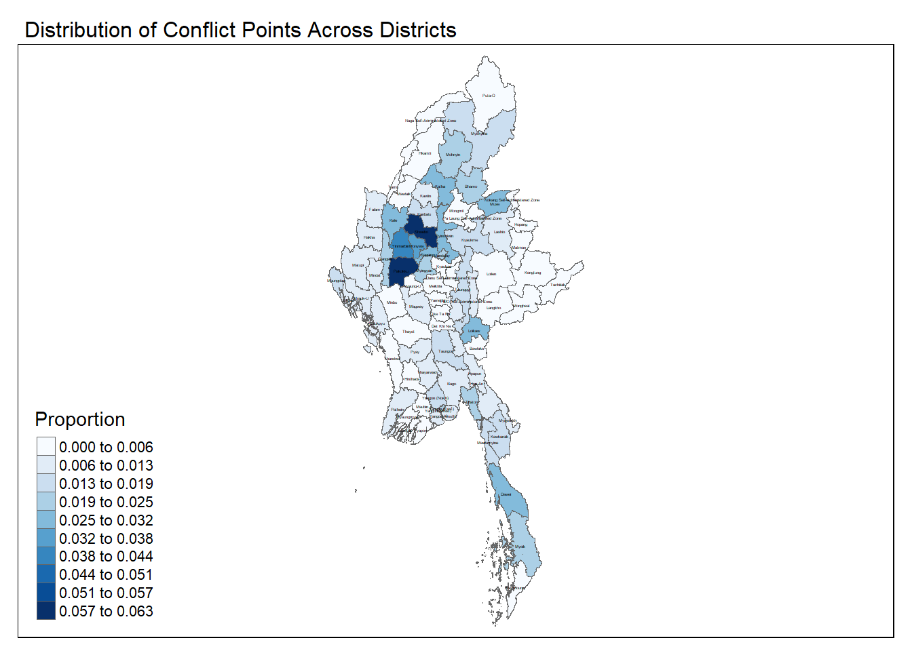
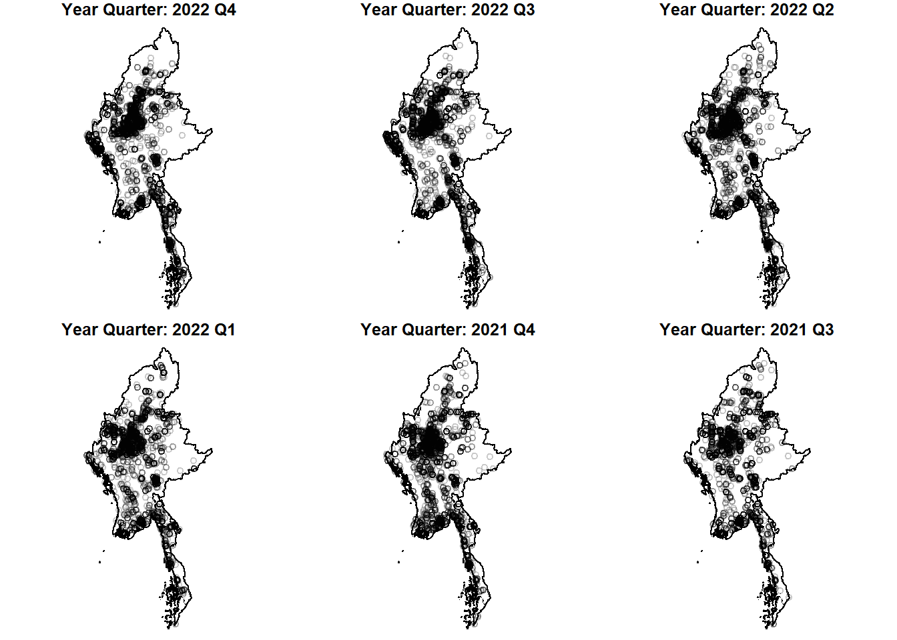
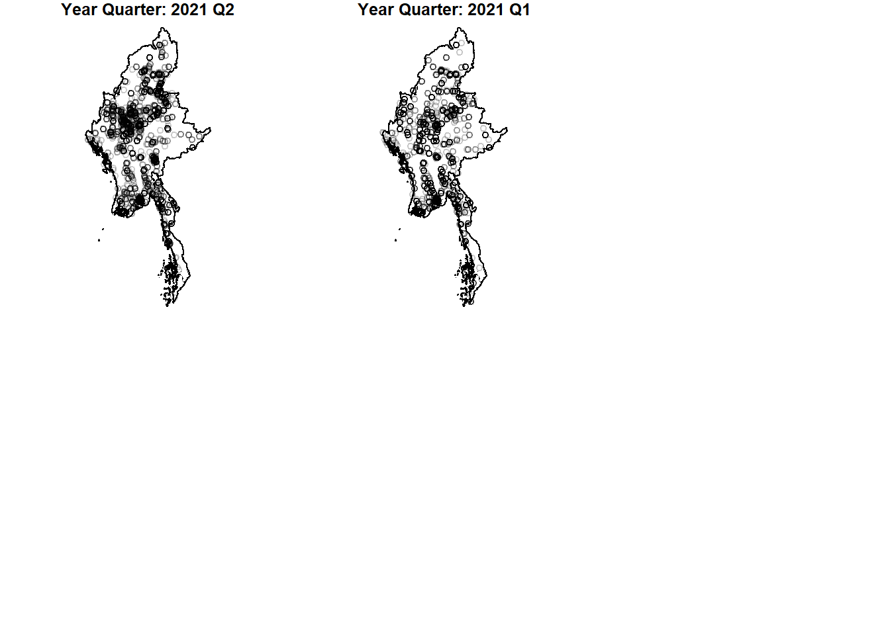
4. 1st Order Spatial Point Patterns Analysis
4.1 Working with Different Bandwidth Methods
Using the geospatial data sets prepared, I will now perform 1st order spatial point pattern analysis to derive KDE layers in a quarterly basis by first leveraging kernel density estimation (KDE).
I will be using a variety of automatic bandwidth methods via density() of the spatstat package, to determine the most optimal method for this analysis. Namely using bw.diggle(), bw.ppl(), bw.CvL() and bw.scott().
Steps taken to calculate the KDE:
- Extract the masked ppp object for the current quarter.
- Compute the kernel density estimate by setting the
signmaparameters. - Plot the kernel density estimate using
plot()where “Bw” represents the optimal bandwidth
For the purposes of identifying the most optimal bandwidth method, I will create a ppp_obj using the 2021 Q1 conflict events first to assist my decision-making.
# Set Up
ppp_obj = masked_ppp_list$`2021 Q1`1) Using bw.diggle()
The bw.diggle() bandwidth is referred to as Diggle’s cross-validation bandwidth which minimises the mean-squared error (MSE) to balance between under and over-smoothing. I will use the density() function to compute the kernel density of the masked ppp objects and visualise the distribution of conflict event points by using the plot() function.
# bw.diggle()
kde_conflict_bw_diggle <- density(ppp_obj,
sigma=bw.diggle,
edge=TRUE,
kernel="gaussian")
optimal_bw_d = floor(bw.diggle(ppp_obj)[[1]]*10)/10
plot(kde_conflict_bw_diggle, main = paste("bw.diggle()", "(Bw:",optimal_bw_d,"m)"))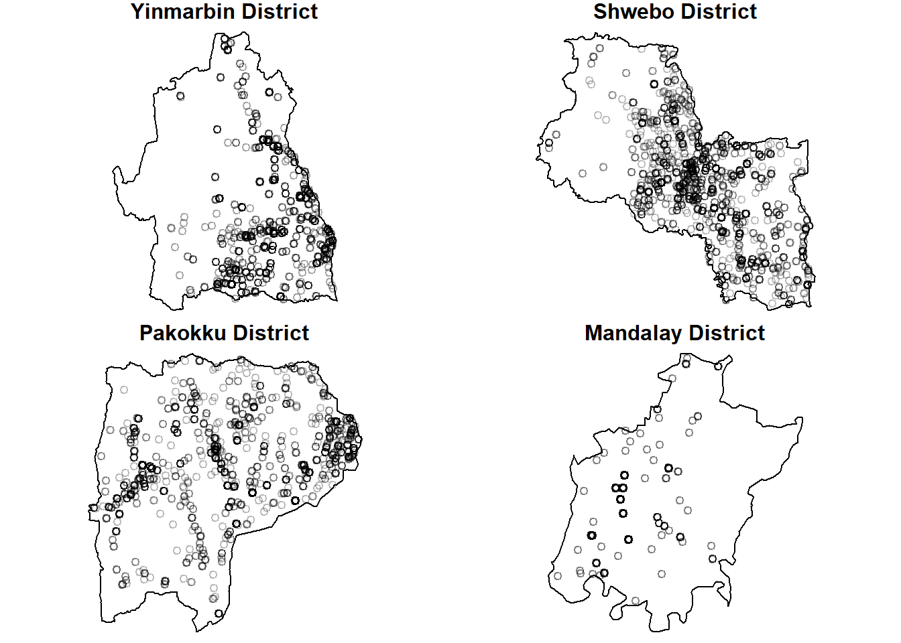
2) Using bw.ppl()
The second bandwidth method I attempted using is bw.ppl(), This method chooses the bandwidth that minimises the likelihood cross-validation score and improving the prediction accuracy of the kernel density estimate.
# bw.ppl()
kde_conflict_bw_ppl <- density(ppp_obj,
sigma=bw.ppl,
edge=TRUE,
kernel="gaussian")
optimal_bw_p = floor(bw.ppl(ppp_obj)[[1]]*10)/10
plot(kde_conflict_bw_ppl, main = paste("bw.ppl()", "(Bw:",optimal_bw_p,"m)"))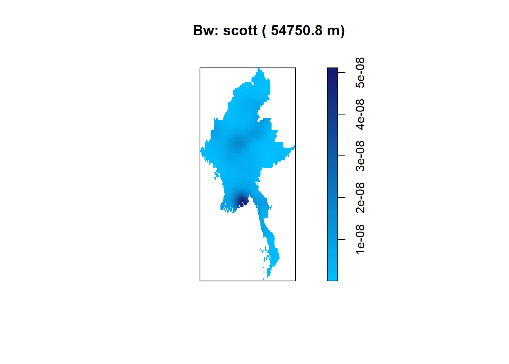
💡 Observations: As
bw.ppl()tends to choose smaller bandwidths, it provide more localised density estimates which highlights finer spatial details. As such, we can see more variability and finer details in the density distribution, with more variation between high- and low-density areas.
3) Using bw.CvL()
Thirdly, let’s explore the bandwidth method bw.CvL(), also known as Cronie and Van Lieshout cross-validation, designed to provide an optimal, adaptive bandwidth for inhomogeneous point patterns.. Similar to bw.ppl(), it aims to reduce the error measure but also aims to balance over and under-fitting based on the spatial structure of the data.
# bw.CvL()
kde_conflict_bw_CvL <- density(ppp_obj,
sigma=bw.CvL,
edge=TRUE,
kernel="gaussian")
optimal_bw_c = floor(bw.CvL(ppp_obj)[[1]]*10)/10
plot(kde_conflict_bw_CvL, main = paste("bw.CvL()", "(Bw:",optimal_bw_c,"m)"))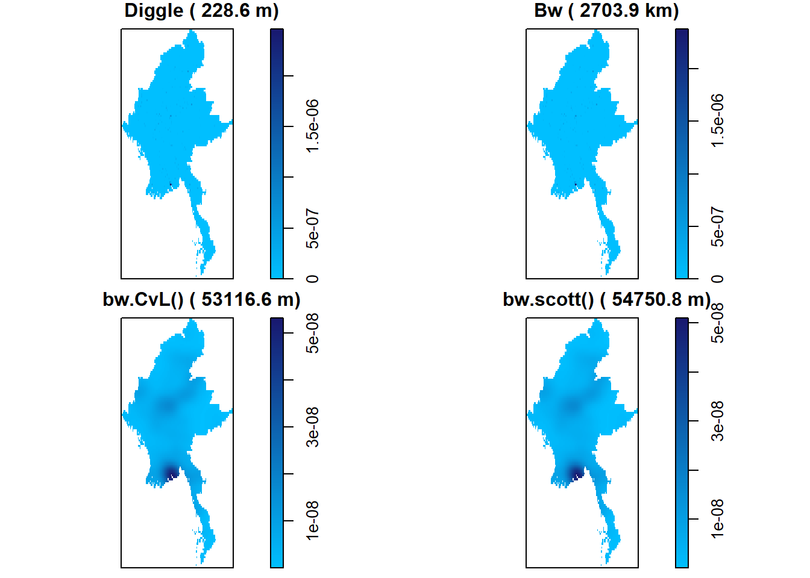
💡 Observations: The kernel density plot shows a good balance between detail and smoothness, making it suitable for capturing both fine local structures and overall density trends in spatial data.
4) Using bw.scott()
Lastly, I will explore the bw.scott() bandwidth method. This method returns separate bandwidths for the x- and y-axes which is ideal for our spatial data that contains both x and y components. I will combine these bandwidths into a single value for isotropic kernel density estimation by taking the taking the geometric mean as shown in the value returned by sigma_combined.
# bw.scott()
bw_values <- bw.scott(ppp_obj)
sigma_x <- bw_values[1]
sigma_y <- bw_values[2]
sigma_combined <- sqrt(sigma_x * sigma_y)
kde_conflict_bw_scott <- density(ppp_obj,
sigma = sigma_combined,
edge = TRUE,
kernel = "gaussian")
optimal_bw_s = floor(sigma_combined*10)/10
plot(kde_conflict_bw_scott, main = paste("bw.scott()", "(Bw:",optimal_bw_s,"m)"))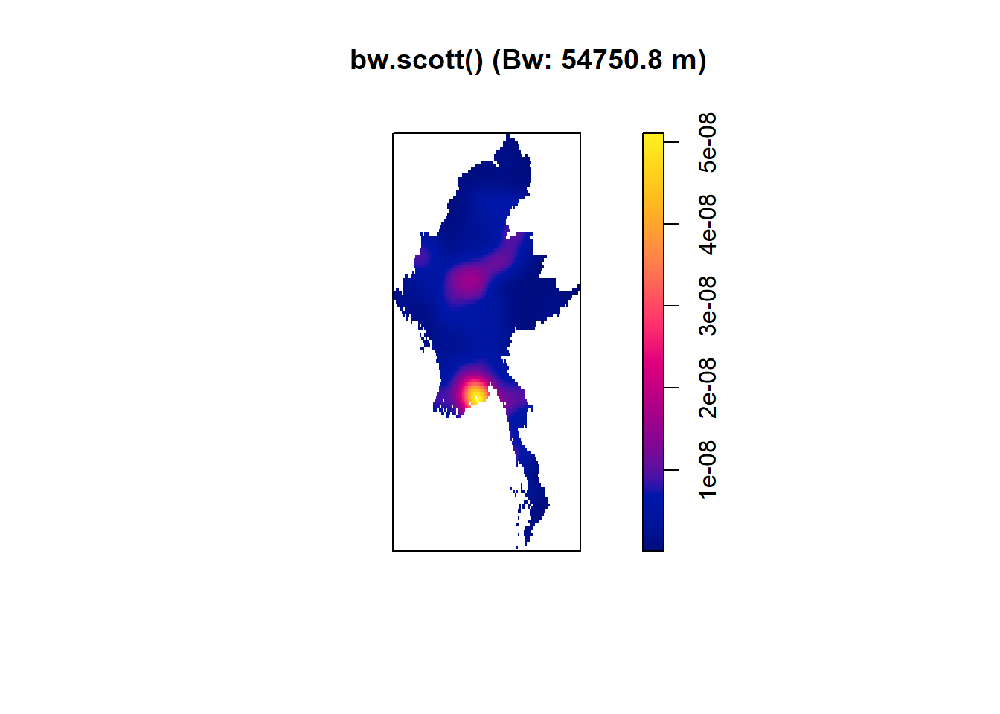
💡 Observations: As shown, the geometric mean ensures equal smoothing in both x and y directions, making it a good choice when you want a balanced and general overview of the spatial data distribution
Selecting a Bandwidth Method
Based on my research and observations of the charts below, the four methods cater to different types of data depending on how varied the densities are spread across and the granularity of conflict events. Additionally, I notice that bw.ppl() and bw.CvL() take a significantly longer time to complete its KDE computations.
bw.diggle()effective for homogeneous data in seeing general conflict hotspots.bw.ppl()for non-homogeneous data in analysing specific locations of localised conflict zones.bw.CvL()for non-homogeneous data in capturing both localised conflicts and the broader conflict trends.bw.scott()for a fast overview and aren’t focusing on small clusters or detailed variations especially when working with large datasets.
par(mfrow = c(2,2), mar = c(0,0,1,0))
plot(kde_conflict_bw_diggle, main = paste("bw.diggle()", "(Bw:",optimal_bw_d,"m)"))
plot(kde_conflict_bw_ppl, main = paste("bw.ppl()", "(Bw:",optimal_bw_p,"km)"))
plot(kde_conflict_bw_CvL, main = paste("bw.CvL()", "(Bw:",optimal_bw_c,"m)"))
plot(kde_conflict_bw_scott, main = paste("bw.scott()", "(Bw:",optimal_bw_s,"m)"))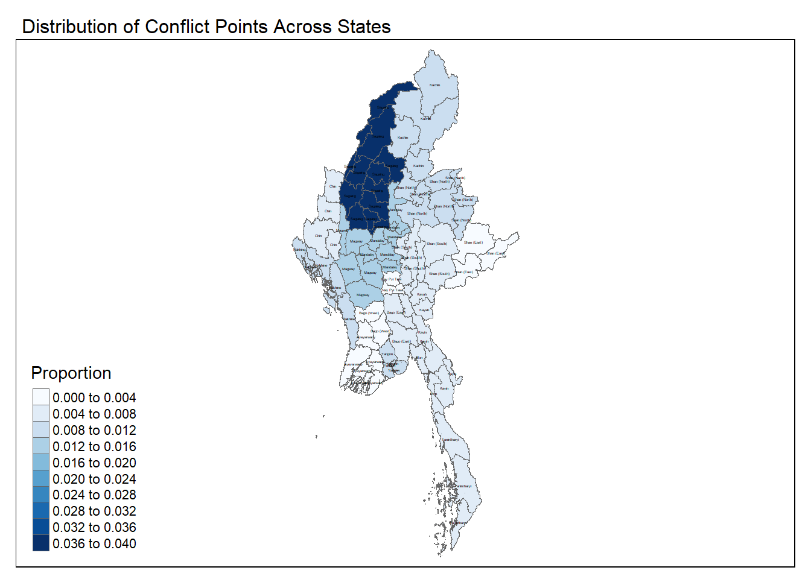
💡 Decision: I decided to use
bw.diggle()for computing the KDE of the masked ppp objects based on each quarter. This bandwidth method is effective for the relatively homogeneous data spread of our Myanmar conflict data as it is the not as computationally heavy asbw.ppl()andbw.CvL()and we get a relatively smooth density estimate that isn’t too detailed likebw.ppl()nor too generalised likebw.scott().
Now, let us perform the KDE computation for the conflict events across all quarters using bw.diggle().
# Calculate density using bw.diggle()
par(mfrow = c(2,3), mar = c(0,0,1,0))
for (name in names(masked_ppp_list)) {
ppp_obj = masked_ppp_list[[name]]
kde_conflict_bw <- density(ppp_obj,
sigma=bw.diggle,
edge=TRUE,
kernel="gaussian")
optimal_bw = floor(bw.diggle(ppp_obj)[[1]]*10)/10
plot(kde_conflict_bw, main = paste(name, "(Bw:",optimal_bw,"m)"))
}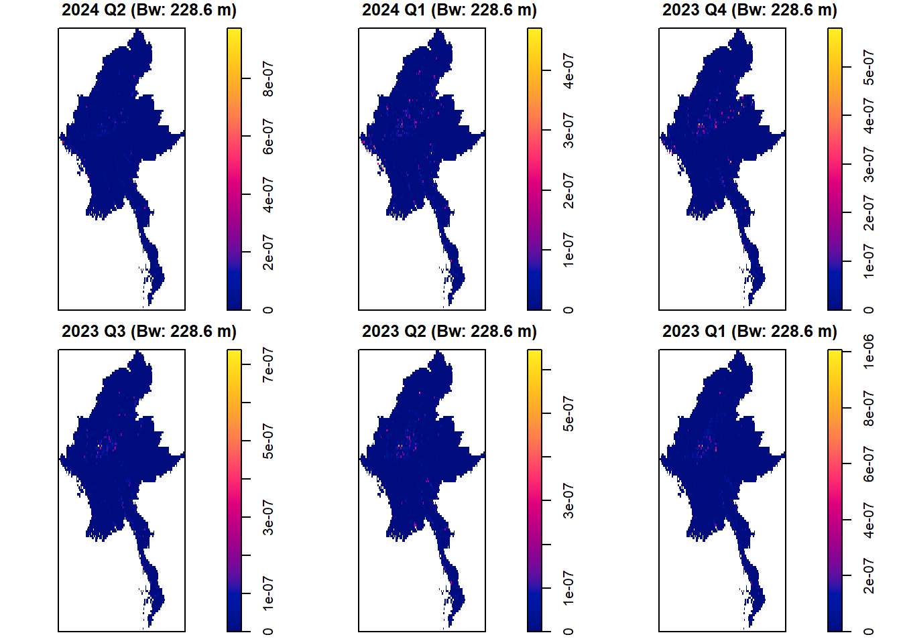
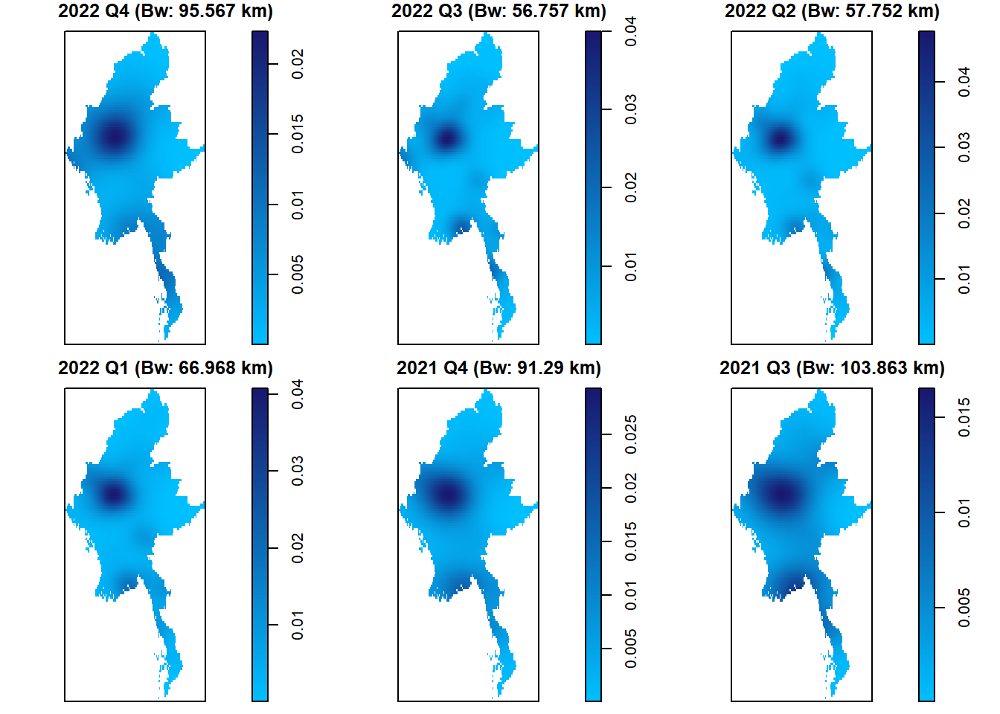
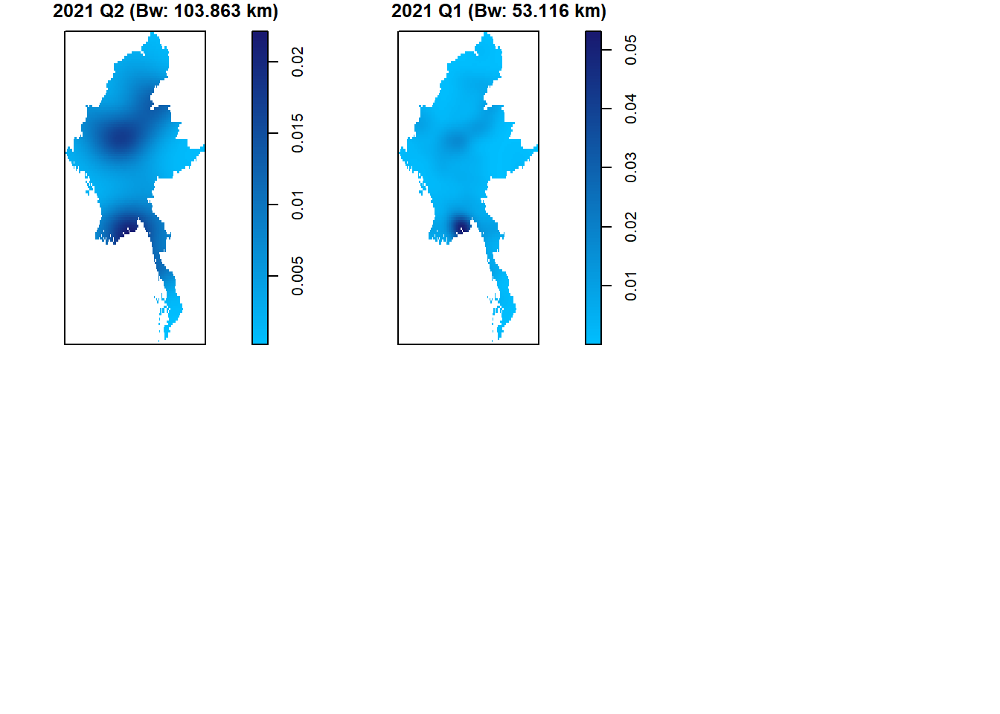
💡 Observations of Density Values Range
The density values of the output range from 0 to 0.00638 which can be too small to comprehend. After some research, it appears that the default unit of measurement of EPSG:32647 is in metres. As a result, this causes the density values computed to be in number of points per square metre.
💡 Observations of Bandwidth Size
A bandwidth of around 207 to 228 in the context of kernel density estimation means that the kernel function will smooth the point data over a distance of approximately 207 to 228 metres from each point. Since a bandwidth of around 200 metres is considered relatively large, this results in a smoother density estimate with less emphasis on local clusters as indicated in the broader spatial trends as shown.
To make the density values more comprehensible, we will re-scale the density values from metres to kilometres using rescale().
masked_ppp_list_km = list()
for (name in names(masked_ppp_list)) {
ppp_obj <- masked_ppp_list[[name]]
ppp_obj_km <- rescale(ppp_obj, 1000, "km")
masked_ppp_list_km[[name]] <- ppp_obj_km
}Now, we can re-run the density() function to compute the KDE map.
par(mfrow = c(2,3), mar = c(0,0,1,0))
for (name in names(masked_ppp_list_km)) {
ppp_obj = masked_ppp_list_km[[name]]
kde_conflict_bw <- density(ppp_obj,
sigma=bw.diggle,
edge=TRUE,
kernel="gaussian")
optimal_bw = floor(bw.diggle(ppp_obj)[[1]]*1000)/1000
plot(kde_conflict_bw, main = paste(name, "(Bw:",optimal_bw,"km)"))
}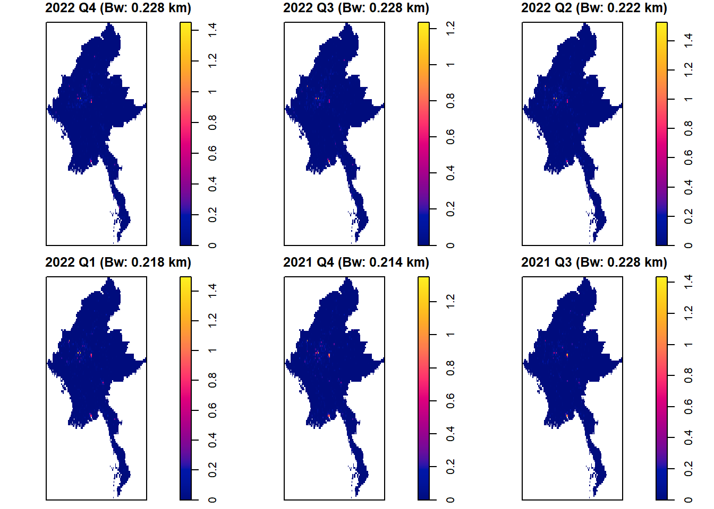
💡 Observations: Notice the output image looks identical to the earlier version, the only changes are in the data values from metres to kilometres (refer to the legend).
4.2 Working with Different Kernel Methods
ppp_obj = masked_ppp_list_km$`2021 Q1`1) Using ‘gaussian’ kernel
# gaussian
kde_conflict_g <- density(ppp_obj,
sigma=bw.diggle,
edge=TRUE,
kernel="gaussian")
plot(kde_conflict_g, main="Gaussian Kernel")2) Using ‘epanechniko’ kernel
# epanechniko
kde_conflict_e <- density(ppp_obj,
sigma=bw.diggle,
edge=TRUE,
kernel="epanechnikov")Warning in density.ppp(ppp_obj, sigma = bw.diggle, edge = TRUE, kernel =
"epanechnikov"): Bandwidth selection will be based on Gaussian kernelplot(kde_conflict_e, main="Epanechnikov Kernel")3) Using ‘disc’ kernel
# disc
kde_conflict_d <- density(ppp_obj,
sigma=bw.diggle,
edge=TRUE,
kernel="disc")Warning in density.ppp(ppp_obj, sigma = bw.diggle, edge = TRUE, kernel =
"disc"): Bandwidth selection will be based on Gaussian kernelplot(kde_conflict_d, main="Disc Kernel")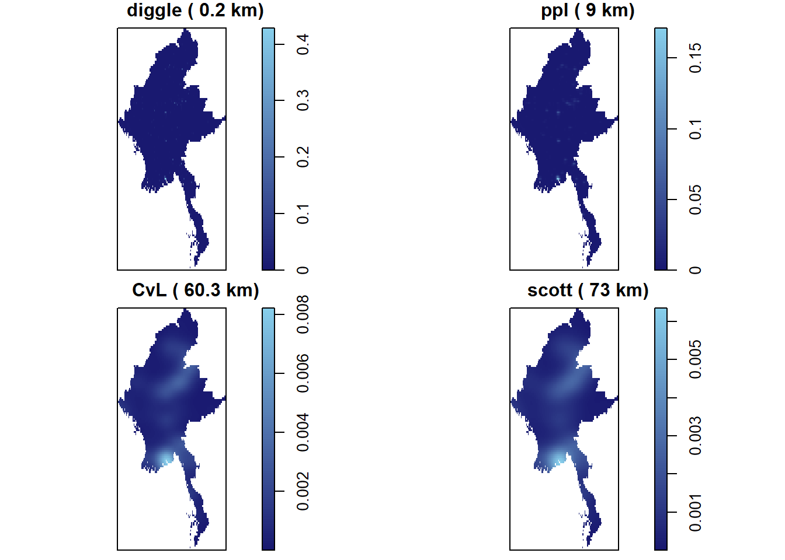
4) Using ‘quartic’ kernel
# quartic
kde_conflict_q <- density(ppp_obj,
sigma=bw.diggle,
edge=TRUE,
kernel="quartic")Warning in density.ppp(ppp_obj, sigma = bw.diggle, edge = TRUE, kernel =
"quartic"): Bandwidth selection will be based on Gaussian kernelplot(kde_conflict_q, main="Quartic Kernel")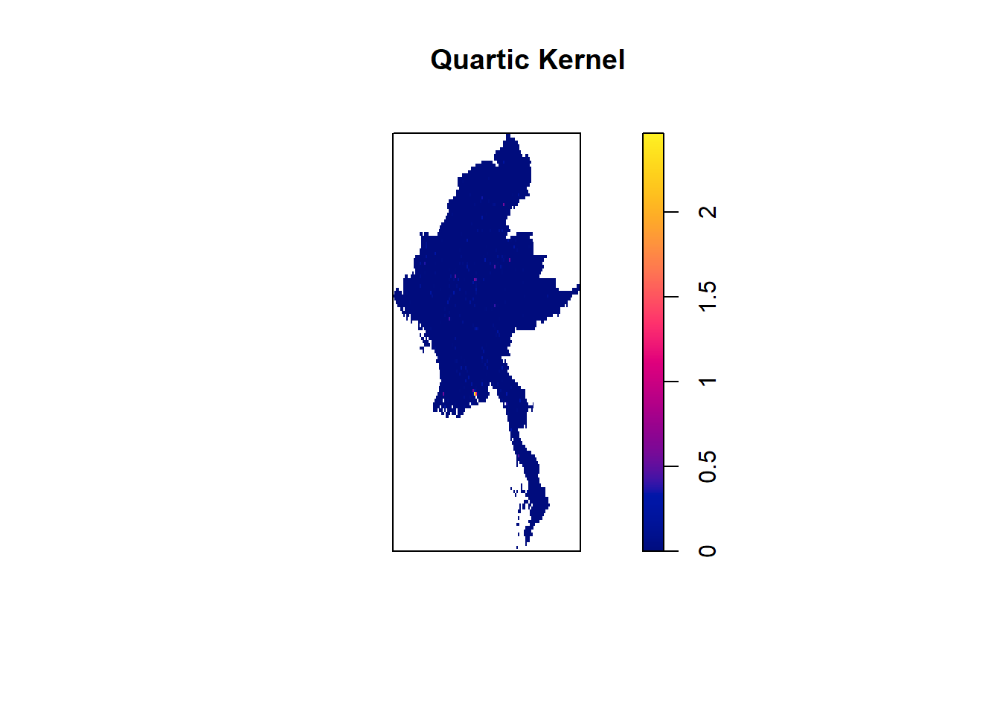
par(mfrow = c(2,2), mar = c(0,0,1,0))
plot(kde_conflict_g, main="Gaussian Kernel")
plot(kde_conflict_e, main="Epanechnikov Kernel")
plot(kde_conflict_d, main="Disc Kernel")
plot(kde_conflict_q, main="Quartic Kernel")
4.3 Working with Fixed and Adaptive KDE
5. Spatio-Tempmoral KDE
We focus on the continuous time